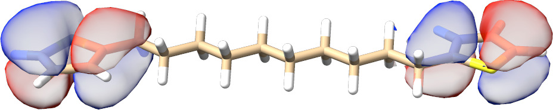

完全与不完全活性空间自洽场（CASSCF 与 RAS/ORMAS）¶
引言¶
完全活性空间自洽场（complete active space self-consistent field, CASSCF）方法是多组态 SCF 方法的一种特殊形式， 可以看作 Hartree-Fock 方法的扩展。它是研究静态相关效应的非常强大的方法， 也是 MR-CI 和 MR-PT 处理的坚实基础。它可以应用于基态和激发态或它们的平均。 ORCA 中的实现相当通用，也允许省略活性-活性旋转的不完全活性空间。 此类不完全模型空间的例子包括任意参考组态、限制活性空间（RAS）和占据限制多重活性空间（ORMAS）。 在接下来的章节中，主要重点是完全活性空间。
该主题相当复杂，最终需要用户大量的洞察才能成功。 因此，除手册中的材料外，我们还创建了 CASSCF 教程， 涵盖了计算设计和程序使用的许多实用技巧。
有几种情况下 CASSCF 处理是个好主意：
-
来自多个近简并组态（静态相关）的具有显著多参考特征的波函数
-
需要多行列式处理的波函数（例如原子、离子、过渡金属配合物的多重态）
-
键断裂或部分断裂的情况。
-
生成在多个态的要求之间折中的轨道。
-
作为涵盖动态相关的多参考方法（NEVPT2、MRCI、MREOM 等）的起点。
-
为多行列式/多参考波函数生成真正的自旋本征函数。
在所有这些情况下，单行列式 Hartree-Fock/DFT 方法严重失效，而 CASSCF 仍是好的选择。 在后者中，轨道被分为三个子空间：(a) 在所有组态状态函数（CSF）中双占据的内部（非活性）轨道；(b) 部分占据的（活性）轨道；(c) 在所有 CSF 中为空的虚（外部）轨道。
固定数量的电子被分配到内部子空间和活性 子空间。如果\(N\) 个电子在\(M\) 个轨道中是"活性的"，就称其为 CASSCF(\(N\),\(M\)) 波函数。\(N\) 个电子在\(M\) 个 轨道中的所有自旋本征函数都包含在组态相互作用步骤（CAS-CI）中，并且 能量关于 MO 和 CI 系数的变化取驻定值。可以计算任意数量不同多重度的任意数量的根，CASSCF 能量可以针对用户定义的这些态的平均进行优化。
CASSCF 方法有一个很好的优点，即它是完全变分的，这使得解析梯度的计算相对容易。 因此，CASSCF 方法可用于几何优化和数值频率计算。应当注意，态平均 CASSCF 计算一般不是完全变分的。 轨道必须针对感兴趣的态进行优化。
ORCA 中提供了许多性质（g-张量、ZFS 分裂、CD、MCD、磁化率、偶极矩等）。大多数 CASSCF
性质（如 EPR 参数）在拟简并微扰理论框架中计算。
此外，一些性质（如 ZFS 分裂）也可以通过微扰理论计算或从有效哈密顿量严格提取。
关于可用性质和选项的详细描述，参见第
casscf.properties 节。上述所有性质都在 CASSCF 模块内计算。
例外是 Mössbauer 参数，当密度（在密度容器中）可用时，它们使用 %EPRNMR 块中的常用关键词计算。一般而言，%EPRNMR 块中的性质使用线性响应理论导出。后者对 CASSCF 波函数的扩展在第 spectroscopyproperties.casscfresp 节中针对几个选定的性质报告。
注意
CASSCF 模块承载了 CASPT2 和 NEVPT2 方法及其变体。更高阶的多参考理论（例如 FIC-NEVPT4(sd)）可以在 AutoCI 模块和 MRCI 模块中找到。
理论¶
将态记为\(I\)，其自旋记为\(S\)，CASSCF 波函数写为
这里波函数在一组组态状态函数（CSFs）中展开， 它们是适应总自旋\(S\) 的行列式的线性组合。
为了定义实际的 CSF 集（\(\Phi_{I}^{S}\)），分子轨道空间被划分为三个用户定义的子空间：
- "非活性轨道"是在所有 CSF 中双占据的轨道。
- "活性轨道"是在 CSF 中占据数可变的轨道。
- "外部轨道"在所有 CSF 中为空。
完全模型空间 CAS(\(N\),\(M\)) 包括所有 CSF，它们产生于完全组态相互作用（FCI）， 其中\(N\) 个活性电子分布在\(M\) 个活性轨道中，而系统的其余电子位于双占据的非活性轨道中。活性轨道是拟设的核心，必须由用户谨慎选择。 CSF 的数量随活性电子和轨道的数量极快增长（基本上是阶乘级的）。取决于实际体系，可行性的极限大约在\(\sim\)14 个活性轨道或活性空间中约一百万个 CSF。更大的活性空间可以用近似 FCI 求解器（如迭代组态展开 CI（ICE-CI））或密度矩阵重整化群（DMRG）方法来处理。[^approxfci] 在某些情况下，不完全模型空间（如 RAS 或 ORMAS）是可行的替代方案。
展开系数\(C_{kI}\) 代表第一组变分参数。每个 CSF 由一组公共的正交归一分子轨道\(\psi_{i} \left({ \mathrm{r }} \right)\) 构建，后者又在基函数中展开： \(\psi_{i} \left({ \mathrm{r }} \right)=\sum\nolimits_\mu{c_{\mu i} \phi_{\mu } \left({ \mathrm{r }} \right)}\)。 MO 系数\(c_{\mu i}\) 构成第二组变分参数。
CASSCF 波函数的能量由 Rayleigh 商给出
它是真实总能量的上界。然而，CASSCF 计算不是为提供接近精确能量的总能量值而设计的。CASSCF 计算的目的是提供定性正确的波函数，为动态电子相关的处理形成良好的起点。
CASSCF 方法是完全变分的，即能量关于 MO 和 CI 两组系数的变化取驻定值。收敛时，能量关于 MO 和 CI 系数的梯度消失
对于完全模型空间，波函数和能量关于三个子空间内的幺正变换是不变的。因此，子空间内的轨道仅定义到相差一个幺正变换，程序需要做出某种正则化选择。在 ORCA 中，最终轨道默认是：
-
活性空间中的自然轨道，
-
在内部空间中对角化 CASSCF Fock 矩阵的轨道和
-
在外部空间中对角化 CASSCF Fock 矩阵的轨道。
CASSCF 波函数的优化¶
一般而言，除 trivial 情况外，CASSCF 波函数比 RHF（或 UHF）波函数难优化得多。根本原因是 c 和 C 的变化可能强烈耦合，能量泛函在（c，C）空间中可能有许多局部极小值。因此，起始轨道的选择确实非常重要，选择哪些轨道和电子包含在活性空间中对 CASSCF 研究的成功有决定性影响。
一般而言，变换到自然轨道后，可以根据占据数对活性空间轨道进行分类，占据数在 0.0 到 2.0 之间变化。一般而言，如果将占据数接近零或接近 2.0 的轨道包含在活性空间中，几乎肯定会出现收敛问题。占据数在 0.02 到 1.98 之间通常非常合理，不应导致大的收敛问题。出现收敛问题的原因是，如果活性轨道几乎双占据，能量对内部和活性轨道之间旋转的依赖性非常弱，对于外部和弱占据活性轨道之间的旋转也是如此。然而，在某些情况下（例如在研究势能面时），可能无法避免将弱占据或几乎非活性的轨道包含在活性空间中，在这些情况下需要使用最强大的收敛辅助手段（见下文）。
除 TRAH-CASSCF 求解器Helmich-Paris2022外， ORCA 的实现遵循两步过程，其中在每个循环（宏迭代）中，在当前分子轨道集下求解 CAS-CI 问题。然后用幺正矩阵 U 更新轨道系数
然后开始新的循环。重复该过程直到收敛，即能量不再变化（默认 ETol 1e-8）或轨道梯度接近零（默认 GTol 1e-3）。相比之下，一步拟设同时更新轨道系数和 CI 系数。
在两种情况下，幺正变换都用反对称矩阵参数化（\(X_{pq} =-X_{qp}\)）
其中\(X_{pq}\) 由非冗余轨道旋转（子空间间）组成。
与单行列式波函数（RHF、UHF、RKS、UKS）的情况一样，存在一阶收敛方法，
例如当前默认的微扰 SuperCI（SuperCI_PT）kollmarSXPT2019，它们只需要轨道梯度
所需的变换积分\((tu|vx)\)（\(tuv\) 为活性轨道，\(x\) 属于任何子空间）非常少，即使对于较大的计算也很容易保存在中央存储中。
另一方面，二阶 CASSCF 方法计算 Hessian 矩阵并需要积分\((pq|xy)\) 和\((px|qy)\)（\(p,q=\) 内部、活性；\(x,y=\) 任意轨道）。这是一组相当大的积分，其生成在 CPU 时间和磁盘存储方面都很费力。标准的二阶方法（如增广 Hessian（NR））在可良好处理的分子大小方面更为有限。虽然 NR 在极小值附近效率很高，但当初始轨道偏离太远时鲁棒性较差。
受限步长增广 Hessian（TRAH）缓解了许多缺点，提供了一个更鲁棒的二阶拟设，也可以处理更大的体系。helmich_trahcasscf_2022
这里大多数积分使用 RI 近似以 AO 直接策略处理。更多细节请参考原始出版物。
态平均¶
在许多情况下，希望不是为单个态而是为多个态的平均优化轨道。为了看清所做的工作，态\(I\) 的能量被重写为：
这里\(\Gamma_{q}^{p\left( I \right)}\) 和\(\Gamma_{qs}^{pr\left( I \right)}\) 是该态的单粒子和双粒子约化 电子密度矩阵（标记\(p, q, r, s\) 张成 非活性和活性子空间）：
平均能量只需通过对密度 矩阵使用任意权重\(w_I\) 求平均得到，权重由用户定义但 约束为总和为一。
基本用法¶
CASSCF 计算始终需要的最基本输入信息是活性电子数和轨道数的指定。
ORCA 中的 CASSCF 程序可以平均多个多重度的态。 多重度以列表给出。对于每个多重度，应指定根数：
%casscf mult 1,3 # here: multiplicities singlet and triplet
nroots 4,2 # four singlets, two triplets
end
如果启用了 ORCA 中的对称性处理（! UseSym），每个多重度块必须分配一个不可约表示。
给定对称性中对应于"irrep\"的数字
在 ORCA 的输出中打印。
%casscf mult 1,3 # here: multiplicities singlet and triplet
irrep 0,1 # here: irrep for each mult. block (mandatory!)
nroots 4,2 # four singlets, two triplets
多个根和多重度通常意味着态平均 CASSCF（SA-CASSCF）计算。注意程序默认为多重度块选择相等 权重。给定块内的根具有 相等权重。用户可以为多重度块和根定义自定义加权方案：
%casscf mult 1,3 # here: multiplicities singlet and triplet
nroots 4,2 # four singlets, two triplets
bweight 2,1 # singlets and triplets weighted 2:1
weights[0] = 0.5,0.2,0.2,0.2 # singlet weights
weights[1] = 0.7,0.3 # triplet weights
end
程序自动归一化这些权重，使所有权重之和为一。如果希望收敛到激发态，
则 weights[0] 数组可能类似于 0.0,0.0,1.0（这将
为第三激发态优化轨道）。如果多个态
在轨道优化过程中交叉，最终会导致
收敛问题。
我们顺带指出，态平均
过程的收敛轨道是这组态的折中。ORCA 默认只
打印 SA-CASSCF 梯度范数。态特定梯度在计算结束时用关键词 PrintGState 汇总。
轨道优化（两步方法）¶
下面我们讨论两步拟设的可用选项，其中轨道更新和 CI 问题按顺序求解。更强大且稍昂贵的一步拟设在第 casscf.trah 节中描述。我们指出，许多收敛问题已经可以通过更换初始轨道来解决。
警告
以下关键词是可选的，只应在面临严重收敛困难时使用。理想情况下，默认或 !TRAH 应该足够。
除微扰 SuperCI（SuperCI_PT - 默认）kollmarSXPT2019外，还实现了几种轨道优化方法。
# Keywords to be used as Orbstep/Switchstep
SuperCI_PT # perturbative SuperCI (first-order) - default
TRAH # restricted-step augmented Hessian (second-order 1-step)
#
SuperCI # SuperCI (first-order)
DIIS # DIIS (first-order)
KDIIS # KDIIS (first-order)
SOSCF # approx. Newton-Raphson (first-order)
NR # augmented Hessian Newton-Raphson
# unfolded two-step procedure
# - still not true second-order
不同的收敛器有不同的优势。一阶方法
便宜但通常比二阶
方法需要更多迭代。当梯度远离收敛时，程序使用
定义为 orbstep 的收敛器，而在接近收敛时使用
switchstep。switchstep 的实际判据由
关键词 SwitchConv 和 SwitchIter 定义。
%casscf
OrbStep SuperCI # or any other from the list above
SwitchStep DIIS # or any other from the list above
SwitchConv 0.03 # gradient at which to switch
SwitchIter 15 # iteration at which the switch takes place
# irrespective of the gradient
MaxIter 75 # Maximum number of macro-iterations
end
选择收敛策略时，程序必须在速度和稳健性之间取得平衡。默认策略将 SuperCI_PT 用作 orbstep 和 switchstep 的收敛器。kollmarSXPT2019 它对于恰好双占据或为空的轨道是稳健的。与这些临界占据数接近的轨道的旋转可以通过关键词 DThresh（默认 =1e-6）进一步消除。然而，该方法在轨道优化中相当激进。在某些情况下，例如基组投影或 PATOM 猜测（本征基组投影），程序可能会选择过大的步长。此时通过关键词 MaxRot（默认 =0.2）限制步长可能有用。下文描述的关键词 DThresh 和 MaxRot 是 SuperCI_PT 特有的。对许多用户来说，MaxRot 不如能级移动直观。因此，当前版本也允许能级移动。与其他收敛器相反，不需要能级移动，而且强烈不推荐使用。 除了 GradScaling（见下文）之外，下文进一步描述的其他阻尼技术不适用于 SuperCI_PT。
# SuperCI_PT specific settings
MaxRot 0.05 # cap stepsize
DThresh 1e-6 # thresh for critical occupation
如果使用默认设置时出现收敛问题，建议尝试 !TRAH 选项。 或者，将 orbstep SuperCI 与 switchstep DIIS 结合使用，再配合较大的能级移动（2 Eh），通常能立即成功。所提出的方案通常需要更多迭代。此外，与 SuperCI(PT) 相反，SuperCI、DIIS 和 KDIIS 可能在占据数恰好为 2.0 或 0.0 的活性轨道上遇到困难！KDIIS kollmar1996chem,kollmar1997int——基于微扰理论——是正则 DIIS 过程的近似，可避免冗余旋转。两种 DIIS 方案都避免展开空间中的线性相关。
MaxDIIS 15 # max. no of DIIS vectors to keep
DIISThresh 1e-7 # overlap criteria for linear dependency
SuperCI 与 DIIS（switchstep）的组合特别适合保护活性空间组成。调整能级移动即可完成这项工作。在这里，能级移动是控制收敛最重要的单一手段。
# default = dynamic level-shifting based on Ext-Act, Int-Act
ShiftUp 2.0 # static up-shift the virtual orbitals
ShiftDn 2.0 # static down-shift the internal orbitals
MinShift 0.6 # minimum separation subspaces
如果活性、非活性和虚轨道的轨道能量发生重叠，能级移动就尤为重要。子空间之间的能量间隔会打印在输出中。理想情况下，Ext-Act 和 Act-Int 条目应为正且大于 0.2 Eh。这将帮助程序在整个迭代过程中保持您的活性空间组成。如果输入中未指定移动，ORCA 将选择一个能级移动以保证子空间之间的能量间隔（MinShift）。
E(CAS)= -230.590325053 Eh DE= -0.000798832
--- Energy gap subspaces: Ext-Act = -0.244 Act-Int = -0.002
--- current l-shift: Up(Ext-Act) = 0.54 Dn(Act-Int) = 0.30
在所有已实现的轨道优化方案中，步长与梯度范数相关。可以用关键词 GradScaling 设置恒定的阻尼因子。注意，阻尼和能级移动技术不推荐用于默认收敛器（SuperCI_PT）。
有时活性空间已经仔细选择，但初始梯度仍然相差甚远。为了保持"良好"的活性空间，我们可以抑制除内部-外部旋转之外的所有旋转，直到梯度范数足够小以安全继续。该阈值可以用 FreezeIE 关键词设置。一旦内部-外部方向上的梯度分量权重小于 FreezeIE，所有约束都将解除。ORCA 默认在总梯度范数大于 1.0 且活性旋转权重小于 5% 时冻结活性旋转。将该阈值设为零即可关闭此功能。
类似地，几乎双占据的轨道与非活性轨道之间的旋转可以用阈值 FreezeActive 进行阻尼。只要这类旋转的所有权重都小于 FreezeActive，它们就会被阻尼。与 ShiftDn 相比，它只阻尼内部-活性旋转中"麻烦"的部分。此选项适用于除 SuperCI_PT 之外的所有轨道优化方案。
FreezeIE 0.4 # keep active space until int-ext rotation have
# a contribution of less than 40% to the ||g||
FreezeActive 0.03 # keep almost doubly occupied orbitals as long as
# their contribution is less than 3% to the ||g||
如果计算从收敛的 Hartree-Fock 轨道开始，芯轨道不应因 CASSCF 优化而发生显著变化。收敛拖尾通常与低能轨道的旋转有关。它们对总能量的贡献相当小。用关键词 FreezeGrad 可以将这些旋转从轨道优化过程中省略。
受影响的轨道会在 CASSCF 启动时打印出来。
FreezeGrad ... enabled if ||g|| is below 0.02
Note Convergence can be signaled if the reduced gradient reaches GTol
Last frozen orbital ... 9
First deleted orbital ... 320
Once rotations with core and deleted orbitals are stabilized they will be damped.
默认情况下，与冻结芯（或删除虚轨道）的旋转不会被省略。如果启用 FreezeGrad 选项，则会打印其相对于总梯度的比例。
||g|| = 0.001240414 Max(G)= -0.000431747 Rot=319,1
--- Option=FreezeGrad: ||g|| = 0.001081707
= 87.21%
Omitting frozencore elements
基于 DIIS 的算法有时可能收敛缓慢或在接近结束时"拖尾"。这通常是增广 Hessian 方法（NR）和更廉价的准 Newton（SOSCF）表现更好的区域。请记住，Newton-Raphson 是为在凸曲面（Hessian 是半定的）上优化而设计的。如果 NR 开启过早，很可能不满足这一条件。在这种情况下，程序会抱怨 Hessian 的负本征值或对角元素，如下方代码片段所示。下一个优化步长很大且不可预测。它是一个不确定因素，可能让您更接近收敛，也可能导致 CASSCF 过程立即发散。
||g|| = 0.771376945 Max(G)= 0.216712933 Rot=140,53
--- Orbital Update [ NR]
Warning: NEGATIVE diagonal element D(81,53)= -4.733590
Warning: NEGATIVE diagonal element D(82,53)= -4.737955
...
对于较大的体系，增广 Hessian 方程通过迭代求解（NR 迭代）。当残差范数\(<r|r>\) 足够小时，认为增广 Hessian 已求解。除了整体 CASSCF 收敛性外，负本征值也会影响这些 NR 迭代。
--- Orbital Update [ NR]
AugHess Tolerance (auto): Tol= 1.00e-07
AUGHESS-ITER 0: E= -0.174480747 <r|r>= 0.558679452
AUGHESS-ITER 1: E= -0.308672359 <r|r>= 0.468254671
AUGHESS-ITER 2: E= -0.434272813 <r|r>= 0.286305469
AUGHESS-ITER 3: E= -0.439149451 <r|r>= 0.286514628
AUGHESS-ITER 4: E= -0.605787445 <r|r>= 0.191691955
AUGHESS-ITER 5: E= -0.607766529 <r|r>= 0.310450670
AUGHESS-ITER 6: E= -0.611674930 <r|r>= 0.141402593
AUGHESS-ITER 7: E= -0.623145299 <r|r>= 0.394505306
AUGHESS-ITER 8: E= -0.658410333 <r|r>= 0.166915094
AUGHESS-ITER 9: E= -0.790571374 <r|r>= 4.722929453
AUGHESS-ITER 10: E= -0.790590554 <r|r>= 4.716012014
AugHess: No convergence in the Davidson procedure
...
有一些精细的 NR 设置会影响非凸能量曲面上的收敛行为。我们提及这些关键词是出于完整性考虑，不鼓励更改默认设置。如果由于负本征值而无法改变整体收敛性，建议推迟 NR 的 switchstep（switchconv, switchiter）。这需要一些试错，因为曲面的曲率是先验未知的。
%casscf
...
# NR specific settings:
aughess
Solver 0 # Davidson (default)
1 # Pople (pure NR steps)
2 # DIIS
MaxIter 35 # max. no. of CI iters.
MaxDim 35 # Davidson expansion space
MaxDIIS 12 # max. number of DIIS vectors
UseSubMatrixGuess true # diag a submatrix of the Hessian
# as an initial guess
NGuessMat 512 # size of initial guess matrix (part of
# the Hessian exactly diagonalized)
ExactDiagSwitch 512 # up to this dimension the Hessian
# is exactly diagonalized (small problems)
PrintLevel 1 # amount of output during AH iterations
Tol 1e-6 # convergence tolerance
Compress true # use compressed storage
DiagShift 0.0 # shift of the diagonal elements of the
# Hessian
UseDiagPrec true # use the diagonal in updating
SecShift 1e-4 # shift the higher roots in the Davidson
# secular equations
UpdateShift 0.5 # shift of the denominator in the
# update of the AH coefficients
end
end
注意
-
让我们再次强调：强烈建议先查看您的轨道，并确保进入活性空间的轨道正是您希望进入活性空间的那些！在开始 CASSCF 之前思考参考空间所需的物理内容，可以解决许多问题。轨道选择不当会导致收敛差或结果精度差！选择活性轨道始终需要对所研究分子的化学和物理洞察力！
-
在尝试更高级的选项之前，请先用默认设置试用程序。如果遇到收敛问题，请查看输出，阅读警告信息，并观察梯度和能量如何演变。尝试
!TRAH。增加MaxIter在许多情况下无济于事。 -
使用
!tightscf、!verytightscf等关键词时要小心。这些关键词设置了更高的积分阈值，这是个好主意，但也会收紧 CASSCF 收敛阈值。如果不需要更严格的能量收敛，请在 casscf 块中用ETol重置判据。对于许多应用，能量收敛优于\(10^{-8}\) 是不必要的。
增量 Fock¶
一般而言，收敛强烈受到数值噪声的影响，尤其是在最后的迭代中。数值噪声的一个来源是增量 Fock 构建。因此，强制更频繁地进行完整的 Fock 矩阵构建可能会有所帮助。
如果活性空间中的轨道变化很小，ORCA 中的活性 Fock 矩阵会使用上一循环的密度矩阵来近似，从而节省第二次 Fock 矩阵的构建。然而，这种近似也可能是数值不稳定的来源。阈值 "SwitchDens" 可以设为零以启用精确构建。程序默认从一个相当大的值（1e-2）开始，并在必要时自动减小该参数。
监控活性空间¶
在迭代过程中，活性轨道的选取使其与上一次迭代的活性轨道重叠最大化。最大化重叠对轨道的性质不作任何限制。因此，最初定域化的轨道将保持定域和有序，这有时是一个期望的特性，例如在密度矩阵重整化群方法（DMRG）中。该特性由关键词 ActConstraints 设置，并且默认启用（在前 3 次宏迭代之后）。对于某些轨道优化过程（如 SuperCI），自然轨道更为有利。因此，可以关闭 ActConstraints 以有利于自然轨道的构建（见下文）。如果用户未设置该关键词，ORCA 会为给定的轨道优化步选择最佳选项。
ActConstraints 0 # no checks and no changes
1 # maximize overlap of active orbitals and check sanity (default for DIIS)
2 # make natural orbitals in every iteration (default SuperCI)
3 # make canonical orbitals in every iteration
4 # localize orbitals
除了最大化重叠外，"ActConstraints 1" 还会检查活性空间的组成是否发生了变化，即是否有轨道被旋转出活性空间。在这种情况下，ORCA 会中止并存储最后一组有效的轨道。下面是一个错误消息示例。
--- Orbital Update [ DIIS]
--- Failed to constrain active orbitals due to rotations:
Rot( 37, 35) with OVL=0.960986
Rot( 38, 34) with OVL=0.842114
Rot( 43,104) with OVL=0.031938
在上面的代码片段中，活性空间范围是 37-43。程序报告轨道 37、38 和 43 的性质发生了变化。轨道 43（活性）与上一组活性轨道的重叠仅为 3%，程序因此中止。计算中出现这种情况有许多原因。如果该错误始终伴随相同的轨道出现，那么检查旋转的伙伴轨道（可视化）是值得的。这可能表明活性空间不平衡，应当扩展。在许多情况下，改变能级移动或降低 switchconv 就足以保护活性空间。在某些情况下，关闭完整性检查（"ActConstraints 0"）并重新旋转轨道将使 CASSCF 更接近收敛。一些问题可以通过更好的计算设计来避免。CASSCF 教程 对此有更详细的阐述。
在某些情况下，例如参数扫描，"actconstraints" 会适得其反，应当禁用。换句话说，我们希望允许活性空间组成发生变化。例如，考虑用 CAS(2,2) 表示的乙烯绕双键的旋转。虽然活性空间由成键和反键\(\pi\) 轨道组成，但它们在原子轨道方面的组成会从重叠式构象变为交叉式构象。根据实际输入设置（orbstep 和扫描点数），这可能触发中止。
轨道优化（一步方法）：用 TRAH-CASSCF 实现稳健收敛¶
受限步二阶收敛器 TRAH 现在也可用于态特定和态平均 CASSCF 计算。Helmich-Paris2022 要为您的 CASSCF 计算激活 TRAH，只需在某个简单输入行中添加 !TRAH 并添加一个辅助基组。
2 structure (0 1) N 0.0 0.0 0.0 N 0.0 0.0 1.1
# Auxiliary basis of type /C needed for !TRAH ! TRAH Def2-SVP Def2-SVP/C TightSCF %casscf # define CAS(6,6) nel 6 norb 6 # two lowest singlets states mult 1 nroots 2 end *xyz 0 1 N 0.0 0.0 0.0 N 0.0 0.0 1.1 end
在大多数情况下，没有必要调整任何输入参数。唯一的例外是活性分子轨道表示的选择，它可能对自旋耦合体系的收敛速度有显著影响。从图 fig:trah-cas-spin 可以看出，对于这类计算，定域化活性轨道表现最好。在任何其他情况下，都应使用自然轨道（默认）。
使用不同活性轨道基选择时 SXPT 和 TRAH 的误差收敛情况。
活性轨道基的可选输入选项如下
| 活性轨道 | 含义 |
|---|---|
| NatOrbs | 保持单电子密度矩阵（1-RDM）对角。默认 |
| LocOrbs | 每次宏迭代中对活性 MO 进行 Foster-Boys 定域化。 |
| 推荐用于自旋耦合体系。 | |
| Unchanged | 不改变活性 MO 基。主要是调试选项。 |
| CanonOrbs | 保持总活性 MO Fock 矩阵对角。实验性选项。 |
注意，与 SCF 程序相反，CASSCF 目前没有 AutoTRAH 功能。TRAH 功能必须在输入中显式请求。
使用 RI 近似¶
使用 RI、RI-JK 和 RIJCOSX 近似可以显著加速较大分子的 CASSCF 计算。kollmarSXPT2019 CASSCF 过程中有两个独立的积分生成和变换步骤。除了 HF 和 DFT 方法中核心的常规 Fock 矩阵构建外，轨道梯度和 Hessian 的构建中还会出现更多积分。后者使用关键词 trafostep RI 进行近似，此时需要辅助基组（/C 或更精确的 /JK 辅助基组）。注意，/J 类型的辅助基组不足以拟合这些积分。如果没有合适的辅助基组，AutoAux 功能可能有用。autoaux 我们顺便指出，原则上存在三个不同的辅助基组槽位，可以在 %basis 块中单独指定（第 essentialelements.basisset 节）。作为一个例子，我们用 CAS(6,6) 重新计算第 casscf.orbitals 节中的苯基态例子。
! SV(P) def2-svp/C
! moread
%moinp "Test-CASSCF-Benzene-2.mrci.nat"
# Commented out: Detailed settings of the auxiliary basis in the %basis block,
# where the AuxC slot is relevant for the option TrafoStep RI.
# %basis
# auxC "def2-svp/C"
# end
%casscf
# define CAS(6,6)
nel 6
norb 6
# singlet ground state
mult 1
nroots 1
trafostep ri # enables the RI approximation
end
该计算的能量为 -230.590328 Eh，而之前的结果为 -230.590271 Eh。因此，RI 误差仅为 0.06 mEh，这在任何实际意义上都肯定可以忽略不计。使用更大的 /JK 辅助基组，误差通常要小得多（本例中为 0.02 mEh）。即使需要更精确的结果，先用 RI 预收敛 CASSCF 也是个好主意。所得轨道应是后续不带 RI 的计算的更好猜测，从而节省计算时间。
TrafoStep RI 仅影响 CASSCF 计算中的积分变换，而 Fock 算符仍以标准方式使用四指标积分计算。为了完全避免任何四指标积分求值，您可以通过指定 !RIJCOSX 显著加快每次迭代所需的时间。该关键词隐含 TrafoStep RI。COSX 近似用于 Fock 矩阵的构建。在这种情况下，需要额外的辅助基组（/J 辅助基组）。
! SV(P) def2-svp/C RIJCOSX def2/J
! moread
%moinp "Test-CASSCF-Benzene-2.mrci.nat"
# Commented out: Detailed settings of the auxiliary basis in the %basis block,
# where the AuxJ and AuxC slot are mandatory.
# %basis
# auxJ "def2/J"
# auxC "def2-svp/C"
# end
%casscf
# define CAS(6,6)
nel 6
norb 6
# singlet ground state
mult 1
nroots 1
end
加速和精度与 RHF 和 UHF 计算中观察到的相似。在本例中，RIJCOSX 导致 1 mEh 的误差。该方法在计算能量差时表现更好，因为它可以从误差抵消中受益。RIJCOSX 非常适合收敛大规模体系。注意，对于大型计算，应收紧积分截断值和数值网格。详见第 ri.rijcosx 节。使用松散的数值网格设置会降低 CASSCF 的精度和收敛行为。RIJK 近似提供了另一种拟设。后者用 !RIJK 设置，也可以在常规模式（conv）下运行以获得额外加速。使用 conv 时，必须提供单个足够大的辅助基组，以近似 Fock 矩阵以及梯度/Hessian 积分。在直接模式下，可以为 AuxC 槽位设置额外的辅助基组。
! SV(P) RIJK def2/JK
# Commented out: Detailed settings of the auxiliary basis in the %basis block,
# where only the auxJK slot must be set.
# %basis
# auxJK "def2/JK" # or "AutoAux"
# end
RIJK 方法对 CASSCF 更精确、更稳健，例如这里的误差仅为 0.5 mEH。
最终轨道：正则化选择¶
计算收敛后，ORCA 将进行最后一次宏迭代，在其中"最终确定"轨道。对于完全活性空间（CAS），这些变换不会改变最终能量和波函数。注意，来自近似 CAS-CI 求解器（如 ICE 方法或 DMRG 拟设）的解会受到最终轨道变换的影响。其大小取决于近似波函数的截断水平（例如 TGen、TVar 和 MaxM）。默认的最终轨道在内部和外部空间中关于态平均 Fock 算符是正则的。活性轨道选为自然轨道。其他轨道选择同样有效，可以为各个子空间分别选取。
#internal space
IntOrbs CanonOrbs # canonical
LocOrbs # localized
unchanged # no changes
# partner orbitals for the active space based
# on various concepts
PMOS # based on orthogonalization tails.
OSZ # based on oszillator orbital
DOI # based on differential overlap
#external space
ExtOrbs CanonOrbs # canonical
LocOrbs # localized
unchanged # no changes
# partner orbitals for the active space based
# on various concepts
PMOS # based on orthogonalization tails.
OSZ # based on oszillator orbital
DOI # based on differential overlap
DoubleShell # based on the shell and angular momentum
# of the highest active orbitals, the first few
# virtual orbitals correspond to the doubled-shell.
# All other virt. orbitals are canonicalized.
# For 3d-metal complexes, these are the 4d orbitals!
# For 4d-metal complexes, these are the 5d orbitals!
# And so on...
#active space
ActOrbs NatOrbs # natural
CanonOrbs # canonical
LocOrbs # localized
unchanged # no changes
dOrbs # purify metal d-orbital and call the AILFT
fOrbs # purify metal f-orbital and call the AILFT
SDO # Single Determinant Orbitals: this is only possible if the
# active space has a single hole or a single electron.
# SDOs are then the unique choice of orbitals that simultaneously
# turns each CASSCF root into a single determinant.
SDO 是活性轨道空间特有的。Lang2019 选项集（PMOS, OSZ, DOI, DoubelShell）是内部和外部空间特有的。它们旨在辅助当前活性空间的扩展。所有四个选项都会重新设计紧邻活性空间的前 NOrb（活性轨道数）个轨道，而同一子空间的其余轨道保持正则。重新设计的轨道基于不同的概念。
-
PMOS为所选活性空间生成成键/反键伙伴轨道。它基于活性轨道的正交化尾部。 -
OSZ为每个活性轨道生成一个轨道，使偶极-偶极相互作用最大化。 -
DOI遵循与 OSZ 相同的原理，但改为最大化微分重叠。 -
DoubleShell是外部空间特有的。分析最高的活性 MO 或DoubleShellMO。生成一组具有相同角动量但径向分布更大的轨道。
可选地，上述四个选项可以用关键词 RefMO/DoubleShellMO 补充一个参考 MO。RefMO/DoubleShellMO 的存在会改变默认行为。对于 PMOS、OSZ 和 DOI，给定子空间的所有轨道都被选择为关于参考 MO（必须是活性的）最大化单一目标函数。这与默认设置形成对比，在默认设置中，每个活性 MO 都最大化一个目标函数并挑选一个"最佳"轨道。换句话说，在默认设置中，每个活性轨道在紧邻活性空间的所选子空间中都有一个对应的"最佳"轨道。
上述选项是辅助手段，所得轨道在扩展活性空间之前应加以检查。特别是 PMOS 选项在过渡金属配合物的背景下对于寻找合适的配体轨道非常有用。还有更多选项（dorbs, forbs, DoubleShell）是专门为配位化学设计的。更详细的描述见作为手册补充的 CASSCF 教程。
如果活性空间由单组金属 d 轨道组成，自然轨道可能是 d 轨道的混合物。如果将 actorbs 设置为 dorbs，则会重新混合活性轨道以获得"纯"d 轨道（配体场轨道）。f 轨道和选项 forbs 同理。此外，关键词 dorbs 会自动触发从头算配体场分析（AILFT）。atanasov_modern_2011,lang_ailft_2020该方法已在若干应用中报道。atanasov_detailed_2011,suturina_ailft_2015,aravena_periodic_2016,jung_ailft_2017,singh_covalency_2017,chakraborty_electronic_2017,chilkuri_revisiting_2017,chilkuri_aom_2020注意，实际表示取决于所选的轴系。因此建议正确对齐分子。有关 AILFT 方法的更多细节，我们请参阅 AILFT 章节 casscf.AbInitioLFT、原始文献以及 CASSCF 教程，其中展示了示例。
CI 求解器（CSFCI、ACCCI、…、ICE）¶
CI 步的默认设置基于 CSF，本程序通过生成部分"公式磁带"来完成，并在每次 CI 迭代中读取。当 CSF 数量超过几十万时，该磁带可能变得相当大，这限制了 CASSCF 模块的适用性。加速 CI（ACCCI）具有相同的限制，但使用略有不同的算法，能更高效地处理多根计算。
更大的活性空间可以用 DMRG 方法或我们课题组开发的迭代组态展开（ICE）来处理。chilkuri_ice1,chilkuri_ice2 DMRG 和 ICE 返回近似全 CI 结果。活性空间的最大尺寸取决于体系和所需精度。两种方法都应能处理 10–40 个轨道的活性空间。CASSCF 教程涵盖了以 ACCCI 和 ICE 作为 CI 求解器的示例。
%casscf
CIStep CSFCI # CSF based CI (default)
ACCCI # CSF based CI solver with faster algorithm for
# multi-root calculations
ICE # CSF based approximate CI -> ICE/CIPSI algorithm
DMRGCI # density matrix renormalization group approach instead of the CI
end
在 ICE 方法中，耦合系数的计算非常耗时，并且默认在每次宏迭代中重复进行。为避免重建，建议先生成一个耦合系数库（cclib），并将它用于您所有的 ICE 计算。该方法和 cclib 的细节在 ICE 章节 modelchemistries.iceci 中描述。
传统 CI 求解器（CSFCI、ACCCI、ICE）的详细设置可以在子块中控制。
%casscf
...
# CI specific settings
ci
MaxIter 64 # max. no. of CI iters.
MaxDim 10 # Davidson expansion space = MaxDim * NRoots
NGuessMat 512 # Initial guess matrix: 512x512
PrintLevel 3 # amount of output during CI iterations
ETol 1e-10 # default 0.1*ETol in CASSCF
RTol 1e-10 # default 0.1*ETol in CASSCF
TGen 1e-4 # ICE generator thresh
TVar 1e-11 # ICE selection thresh, default = TGen*1e-7
TPrint 1e-3 # Thresh to print the CI Coefficients / CI weights
PrintWF 0 # (default) prints only the CFGs
csf # Printing of the wave function in the basis of CSFs
det # Printing of the wave function in the basis of Determinants
# ICE/CIPSI specific settings
# See ICE section of the manual:
CIPSIType 0 # 0: CFG based (default)
# 1: CSF based
TVar -1e.7 # variational threshold. negative means 1e-7*TGen
TGen 1e-4 # generator threshold
end
end
CI-step 的 DMRGCI 与 G. K.-L. Chan 课题组开发的 BLOCK 程序接口。chan2002jcp,chan2004jcp,gosh2008jcp,sharma2012jcp 关于 BLOCK 程序、其输入参数、密度矩阵重整化群（DMRG）方法的一般信息和示例的详细描述，见手册的 modelchemistries.dmrg 节。
BLOCK 中的 DMRG 实现是完全自旋适应的。然而，自旋密度和相关性质在当前版本的 BLOCK 代码中不可用。要启动 DMRG 计算，请在常规 CASSCF 输入中添加关键词 "CIStep DMRGCI"。ORCA 将设置默认参数并为 BLOCK 程序生成输入。一般而言，DMRG 对活性空间中的旋转不是不变的。程序默认将运行自动排序过程（Fiedler）。更多和更精细的选项可以在 CASSCF 的 dmrg 子块中设置——完整关键词列表见第 modelchemistries.dmrg 节。
%casscf
nel 8
norb 6
mult 3
CIStep DMRGCI
# Detailed settings
dmrg
# more/refined options
...
end
end
强烈建议从分裂定域化轨道开始计算。任何起始轨道集（gbw 文件）都可以用 orca_loc 程序进行定域化。在 shell 中输入 orca_loc 将返回一个小的帮助文件，其中包含如何设置定域化输入的细节。包括定域化在内的 DMRG 示例见手册的相应章节 modelchemistries.dmrg。实用程序 orca_loc 记录在第 utilities.loc 节。分裂定域化是指对所需活性轨道的内部和虚部进行独立定域化。
模型空间：CAS、RAS 和 ORMAS¶
在 MCSCF 方法中，CI 系数和轨道系数被优化。完全活性空间（CAS）是一种特殊的模型空间，其中 CI 由所有可能的 CSF 组成，这些 CSF 在\(M\) 个活性轨道中有\(N\) 个活性电子（即 CAS(\(N\),\(M\))）。这自然是 %casscf 模块的默认设置。然而，该模块足够通用，可以使用组态（CFG）定义任意 CSF。后者指的是 CSF 的轨道占据。
警告
轨道优化是在省略活性-活性旋转的情况下进行的，而这种旋转可能是不可忽略的。因此，能量对正则化选择敏感（参见 actorbs、actconstraints）。
任意参考¶
使用 refs 子块，可以选择任意 CFG 来构建 CI 空间。给定 CFG 内的所有 CSF 都会被计入。例如，这在 X 射线谱学的背景下很有用。
作为一个简单例子，我们取第 casscf.orbitals 节中的苯分子，并将 CI 空间限制为 RHF 行列式
! SV(P)
! moread
%moinp "Test-CASSCF-Benzene-2.mrci.nat"
%casscf
# define arbitrary CI space using the CFG input mask
refs
{2 2 2 0 0 0} # CFG with the lowest orbitals being doubly occupied.
# Arbitrary CFGs can be added in this block.
# The number of electrons and orbitals
# must match the active space defined below.
end
# define active space
nel 6
norb 6
# define singlet ground state
mult 1
nroots 1
end
限制活性空间（RAS）¶
在 RAS 模型空间中，活性空间被进一步划分为 RAS1、RAS2 和 RAS3。输入 RAS(Nel: R1 H/R2/ R3 P) 需要 6 个参数：'Nel' 指体系中的电子总数。'R1/R2/R3' 定义 RAS1/RAS2/RAS3 中的轨道数。'H' 定义 RAS1 CFG 中的空穴数，而 'P' 定义 RAS3 中的粒子数。在上述限制下，构造所有可能的 CFG。RAS 对定义芯激发态特别有用。
%casscf
# define the active space (mandatory)
nel 11
norb 8
# define the actual RAS partitioning
refs
RAS(11:3 1/5/0 0) # (Nel: NRAS1 MaxHoles / NRAS2 / NRAS3 MaxParticles)
end
...
end
占据限制多重活性空间（ORMAS）¶
用 ORMAS 模型空间可以进行更一般的划分，它由多个活性空间（最多 25 个）组成。每个活性空间用轨道数（'m'）和电子数（范围从 'min' 到 'max'）定义。使用输入掩码 ORMAS(nel: m1 min1 max1, m2 min2 max2,...)，定义活性空间时规定总共 'nel' 个电子分布在所有子空间中。第一个子空间（m1, min1, max1）由 'm1' 个轨道组成，电子数从 'min1' 到 'max1'。后续参数定义下一个子空间（m2,min2,max2），依此类推。注意，标准 CASSCF 参数 nel 和 norb 会被 ORMAS 输入掩码中的参数覆盖。
%casscf
# define the active space (redundant)
nel 10
norb 15
# define the ORMAS partitioning (overwritting nel/norb)
refs
ORMAS(10: 3 4 6 / 2 0 4/ 10 0 2) # 10 electron distributed to:
# first space = 3 orbitals with 4-6 electrons
# second space = 2 orbitals with 0-4 electrons
# third space = 10 orbitals with 0-2 electrons
end
...
end
RASCI 和 ORMAS 模块¶
ORCA 具有一个相当灵活的模块，旨在处理相当灵活的一般 CI 展开。这并不是要与单独选择和非收缩 MRCI、内收缩 AUTOCI 程序或迭代精修 ICE 程序竞争。相反，这是试图创建一个简单而灵活的模块，让专家用户能够使用中等规模的轨道空间尝试各种一般 CI 展开。这不是一个可以用于大分子或具有数百个、更不用说数千个轨道的体系的模块。只有在轨道窗口有限的情况下，它才能用于较大的分子。
重要的是，该模块可以接受单个组态或 CSF 作为参考、RAS 参考以及如下详述的 ORMAS 参考。除了这些灵活的参考空间外，程序还可以在这些参考之上进行各种程度的激发。该模块与用于计算磁性质的 QDPT 驱动以及用于计算光谱的 OPA 驱动相连接。
2 structure (0 1) F 0 0 0 F 0 0 1.457513043738
! RHF cc-PVDZ VeryTightSCF PModel
# AVAS guess for sigma/sigma* active space
%scf
avas
system
shell 2, 2
l 1, 1
m_l 0, 0
center 0, 1
end
end
end
# casscf single bond correlation
%casscf nel 2
norb 2
irrep 0
mult 1
nroots 1
cistep 0
trafostep exact
end
%rasci refs RAS (14: 6 2 / 2 / 18 2)
# this is MRCISD
# MRCISDT would be RAS(14: 6 3 / 2 / 18 3)
# no of corr. el.: RAS1 norb nholes/ RAS2 nel/RAS3 norb nel)
#ORMAS(14: 6 10 12/ 2 0 2/ 18 0 2)
#would be identical. ORMAS can be used with up to 25
# subspaces all given as norb nelmin nelmax
# Indiviual CFGS { 2 2 2 2 2 2 1 1 0 } would be possible
end
# irrep lists can be used as in CASSCF
# irrep 0
mult 1,3 # multiplicity lists as in CASSCF
nroots 5,5 # number of root lists as in CASSCF
cistep accci # accelerated CI as in CASSCF
#csfci : CI in CSFs as in CASSCF
#detci : CI in determinants as in ICE
#treecsf: CI in CSFs as in ICE
ExcLevel 0 # excitation level on top of refs
RejectInvalidRefs false # reject references of invalid spin and
# space symmetry before excitations
# as in MRCI
douv true # optical spectra (UV,CD,MCD)
rel dosoc true end # Magnetic properties
end
* xyz 0 1
F 0 0 0
F 0 0 1.457513043738
*
相关文献：
关键词¶
CASSCF 的简单输入关键词见 tab:modelchemistries.casscf.keywords.simple。 所有这些关键词都要求以 CASSCF 块作为最小输入， 其选项如下所示。
CASSCF 的简单输入关键词
| *关键词* | 描述 |
|---|---|
DMRG |
在 CASSCF 中将 DMRG 设置为 "CIStep" |
NEVPT2 |
SC NEVPT2 |
SC-NEVPT2 |
SC-NEVPT2，与 NEVPT2 相同 |
RI-NEVPT2 |
带 RI 近似的 SC-NEVPT2 |
FIC-NEVPT2 |
FIC-NEVPT2，又称 PC-NEVPT2 |
DLPNO-NEVPT2 |
DLPNO 框架下的 FIC-NEVPT2 |
CASPT2 |
FIC-CASPT2 |
RI-CASPT2 |
带 RI 近似的 FIC-CASPT2 |
DCD-CAS(2) |
二阶动态相关缀饰 CAS |
RI-DCD-CAS(2) |
带 RI 近似的二阶动态相关缀饰 CAS |
警告
请在手动调整收敛之前先尝试默认收敛设置！
%casscf
PrintLevel 3 # amount of printing
# ---------------------------------------------------
# definition of active space
# (mandatory)
# ---------------------------------------------------
nel 6 # number of active space electrons
norb 6 # number of active orbitals
# ---------------------------------------------------
# incomplete model spaces
# (optional)
# ---------------------------------------------------
# define arbitrary CI space using the CFG input mask
refs
# arbitrary CFGs.
{2 2 2 0 0 0}
# RAS(Nel: NRAS1 MaxHoles / NRAS2 / NRAS3 MaxParticle)
RAS(6:2 1/2/2 1)
#ORMAS partitioning (overwritting nel/norb)
ORMAS(10: 3 4 6 / 2 0 4/ 10 0 2) # 10 electron distributed to:
# first space = 3 orbitals with 4-6 electrons
# second space = 2 orbitals with 0-4 electrons
# third space = 10 orbitals with 0-2 electrons
# ---------------------------------------------------
# definition of states
# (mandatory)
# ---------------------------------------------------
mult 1,3 # here: multiplicities singlet and triplet
irrep 0,1 # here: irrep for each mult. block (mandatory!)
nroots 4,2 # four singlets, two triplets
# ---------------------------------------------------
# State-Averaging
# (optional)
# ---------------------------------------------------
bweight 2,1 # singlets and triplets weighted 2:1
weights[0] = 0.5,0.2,0.2,0.2 # singlet weights
weights[1] = 0.7,0.3 # triplet weights
printgstate true # optional printing of the state-specific orbital gradients
# ---------------------------------------------------
# final orbital option (canonicalization)
# (optional)
# ---------------------------------------------------
#internal space
IntOrbs CanonOrbs # canonical - default
LocOrbs # localized
unchanged # no changes
# partner orbitals for the active space based
# on various concepts
PMOS # based on orthogonalization tails.
OSZ # based on oszillator orbital
DOI # based on differential overlap
#external space
ExtOrbs CanonOrbs # canonical - default
LocOrbs # localized
unchanged # no changes
# partner orbitals for the active space based
# on various concepts
PMOS # based on orthogonalization tails.
OSZ # based on oszillator orbital
DOI # based on differential overlap
DoubleShell # based on the shell and angular momentum
# of the highest active orbitals, the first few
# virtual orbitals correspond to the doubled-shell.
# All other virt. orbitals are canonicalized.
# For 3d-metal complexes, these are the 4d orbitals!
# For 4d-metal complexes, these are the 5d orbitals!
# And so on...
#active space
ActOrbs NatOrbs # natural - default
CanonOrbs # canonical
LocOrbs # localized
unchanged # no changes
dOrbs # purify metal d-orbital and call the AILFT
fOrbs # purify metal f-orbital and call the AILFT
LMORBS # calls extended AI-LFT
SDO # Single Determinant Orbitals: this is only possible if the
# active space has a single hole or a single electron.
# SDOs are then the unique choice of orbitals that
# simultaneously turns each CASSCF root into a
# single determinant.
# PMO reference orbitals
RefMO 17 # MO with number 17 (default =-1)
# DoubleShell reference orbital
DoubleShellMO 17 # MO with number 17 (default =-1)
# ---------------------------------------------------
# NTO / NDO printing
# ---------------------------------------------------
DoNTO #Generate Natural Transition Orbitals
NTOStates 1,2,3 #States to consider for NTO analysis. If empty, all are done
NTOThresh 1e-4 #Threshold for printing occupation numbers
DoNDO #Generate Natural Difference Density Orbitals
NDOStates 1,2,3 #States to consider for NDO analysis. If empty, all are done
# ---------------------------------------------------
# RI approximation of the gradient/ Hessian integrals
# (optional)
# ---------------------------------------------------
TrafoStep RI # enabled RI approximation with /C aux basis
# ---------------------------------------------------
# FOCK options
# ---------------------------------------------------
ResetFreq 15 # reset frequency for direct SCF
switchdens 0.0001 # approximate active Fock when density is considered unchanged
# ---------------------------------------------------
# CI settings
# ---------------------------------------------------
CIStep CSFCI # CSF based CI (default)
ACCCI # CSF based CI solver, faster algorithm for multi-root calculations
ICE # CSF based approximate CI -> ICE/CIPSI algorithm
DMRGCI # density matrix renormalization group approach instead of the CI
# CI specific settings
CI
MaxIter 64 # max. no. of CI iters.
MaxDim 10 # Davidson expansion space = MaxDim * NRoots
NGuessMat 512 # Initial guess matrix: 512x512
PrintLevel 3 # amount of output during CI iterations
ETol 1e-10 # default 0.1*ETol in CASSCF
RTol 1e-10 # default 0.1*ETol in CASSCF
TGen 1e-4 # ICE generator thresh
TVar 1e-11 # ICE selection thresh, default = TGen*1e-7
TPrint 1e-3 # Thresh to print the CI Coefficients / CI weights
PrintWF 0 # (default) prints only the CFGs
csf # Printing of the wave function in the basis of CSFs
det # Printing of the wave function in the basis of Determinants
# ICE/CIPSI specific settings
# See ICE section of the manual:
ICEType CFGs # CFG based (default)
CSFs # CSF based
DETs # determinant based
TVar -1e.7 # variational threshold. negative means 1e-7*TGen
TGen 1e-4 # generator threshold
end
# ---------------------------------------------------
# Numerical gradient state-selection
# ---------------------------------------------------
imult 0 # multiplicity block counting from zero
iroot 0 # root for given imult counting from zero
# ---------------------------------------------------
# orbital optimization
# (optional)
# ---------------------------------------------------
GTol 1e-3 # convergence criteria for ||g||
ETol 1e-8 # convergence criteria for energy
# The following options allowed for 'orbstep'/'switchstep'
# SuperCI_PT - perturbative SuperCI (first-order) - default 2-step
# TRAH - restricted-step augmented Hessian (second-order 1-step)
# SuperCI - SuperCI (first-order)
# DIIS - DIIS (first-order)
# KDIIS - KDIIS (first-order)
# SOSCF - approx. Newton-Raphson (first-order)
# NR - augmented Hessian Newton-Raphson
# - unfolded two-step procedure (not true second order)
orbstep SuperCI_PT # default
switchstep SuperCI_PT # default after ||g|| < 'SwitchConv'
SwitchConv 0.03 # gradient norm ||g|| at which to switch
SwitchIter 15 # iteration at which the switch takes place
# irrespective of the gradient
MaxIter 75 # Maximum number of macro-iterations
# level shifts / damping etc
ShiftUp 2.0 # static up-shift the virtual orbitals
ShiftDn 2.0 # static down-shift the internal orbitals
MinShift 0.6 # minimum separation subspaces
# monitoring the active space
ActConstraints 0 # no checks and no changes
1 # maximize overlap of active orbitals and check sanity (default for DIIS)
2 # make natural orbitals in every iteration (default SuperCI)
3 # make canonical orbitals in every iteration
4 # localize orbitals
# 'SuperCI_PT' specific settings
MaxRot 0.05 # cap stepsize
DThresh 1e-6 # thresh for critical occupation
# 'TRAH' specific settings
# see 'TRAH' section of manual.
# DIIS/KDIIS/SuperCI_PT specific
MaxDIIS 15 # max. no of DIIS vectors to keep
DIISThresh 1e-7 # overlap criteria for linear dependency
# 'NR' specific settings:
aughess
Solver 0 # Davidson (default)
1 # Pople (pure NR steps)
2 # DIIS
MaxIter 35 # max. no. of CI iters.
MaxDim 35 # Davidson expansion space
MaxDIIS 12 # max. number of DIIS vectors
UseSubMatrixGuess true # diag a submatrix of the Hessian
# as an initial guess
NGuessMat 512 # size of initial guess matrix (part of
# the Hessian exactly diagonalized)
ExactDiagSwitch 512 # up to this dimension the Hessian
# is exactly diagonalized (small problems)
PrintLevel 1 # amount of output during AH iterations
Tol 1e-6 # convergence tolerance
Compress true # use compressed storage
DiagShift 0.0 # shift of the diagonal elements of the
# Hessian
UseDiagPrec true # use the diagonal in updating
SecShift 1e-4 # shift the higher roots in the Davidson
# secular equations
UpdateShift 0.5 # shift of the denominator in the
# update of the AH coefficients
end
# more dampng options restricted to a few selected 'orbstep'/'switchstep'
FreezeIE 0.4 # keep active space until int-ext rotation have
# a contribution of less than 40% to the ||g||
FreezeActive 0.03 # keep almost doubly occupied orbitals as long as
# their contribution is less than 3% to the ||g||
FreezeGrad 0.2 # omit hitting a gradient norm ||g|| <0.2
GradScaling 0.5 # constant damping in all steps
# -------------------------------------------------------
# one photon spectroscopy
# QDPT properties (rel subblock)
# DMRG
# NEVPT2
# DCD-CAS
# MR-ADC0
# AI-LFT
# TRAH 1-step orbital optimization
# -------------------------------------------------------
# See respective manual section for details
简单示例：Be 基态¶
多参考体系的一个标准例子是 Be 原子。让我们运行两个计算，一个标准的闭壳层计算 （1s\(^{2}\)2s\(^{2})\) 和一个 CASSCF(2,4) 计算，后者还包含了（1s\(^{2}\)2s\(^{1}\)2p\(^{1})\) 和 （1s\(^{2}\)2s\(^{0}\)2p\(^{2})\) 组态。
这个标准闭壳层计算给出能量 -14.56213241 Eh。CASSCF 计算
%casscf mult 1,3 # here: multiplicities singlet and triplet
nroots 4,2 # four singlets, two triplets
end
给出能量 -14.605381525 Eh。因此，包含 2p 壳层导致能量降低 43 mEh，这是相当可观的。CASSCF 程序还打印波函数的组成：
---------------------------------------------
CAS-SCF STATES FOR BLOCK 1 MULT= 1 NROOTS= 1
---------------------------------------------
ROOT 0: E= -14.6053815294 Eh
0.90060 [ 0]: 2000
0.03313 [ 4]: 0200
0.03313 [ 9]: 0002
0.03313 [ 7]: 0020
这些信息应如下读取：最低态由 90% 的组态构成，该组态的活性空间占据模式为 2000，这意味着第一个活性轨道在该组态中双占据，而其他三个为空。MO 向量组成告诉我们这些轨道是什么（ORCA 使用自然轨道对活性空间进行正则化）。
0 1 2 3 4 5
-4.70502 -0.27270 0.11579 0.11579 0.11579 0.16796
2.00000 1.80121 0.06626 0.06626 0.06626 0.00000
-------- -------- -------- -------- -------- --------
0 Be s 100.0 100.0 0.0 0.0 0.0 100.0
0 Be pz 0.0 0.0 13.6 6.1 80.4 0.0
0 Be px 0.0 0.0 1.5 93.8 4.6 0.0
0 Be py 0.0 0.0 84.9 0.1 15.0 0.0
因此，第一个活性空间轨道的占据数为 1.80121，是 Be-2s 轨道。其他三个轨道具有 2p 性质，都具有相同的占据数 0.06626。由于它们在占据数空间中是简并的，它们是三个 2p 轨道的任意混合。那么很清楚，波函数的其他分量（各占 3.31%）是其中一个 2p 轨道被双占据的那些组态。
我们怎么知道要把 2s 和 2p 轨道放入活性空间呢？答案是——我们并不知道！在这种情况下，初始猜测产生的轨道顺序恰好使 2s 和 2p 轨道成为活性轨道，这是"好运"。一般来说，您有责任确保轨道的排序使得您想要放入活性空间的轨道以期望的顺序出现。在许多情况下，这需要对起始轨道进行重新排序和仔细检查。
猜测：自然轨道示例¶
初始猜测和活性轨道的选择对任何 CASSCF 计算的成功都至关重要。通常，默认的 !PModel 猜测不能提供好的起始轨道或正确的活性空间。哪些轨道作为活性轨道进入，取决于体系，需要用户的洞察力。最佳选择可能随分子和计算设计而变化。例如，在镧系/锕系的情况下，片段猜测特别成功，并能快速收敛。许多典型例子（包括片段猜测）可以在 CASSCF 教程中找到。如果活性空间的性质是先验已知的，原子价空间选择（AVAS）提供了一种用户友好的猜测替代方案。
无论初始起始轨道的来源如何，始终建议在轨道优化之前检查轨道。
让我们用苯分子的计算来说明这一原理，我们希望将所有六个\(\pi\) 轨道包含在活性空间中。在进行 RHF 计算之后：
%casscf mult 1,3 # here: multiplicities singlet and triplet
irrep 0,1 # here: irrep for each mult. block (mandatory!)
nroots 4,2 # four singlets, two triplets
我们可以查看 HOMO/LUMO 间隙附近的轨道：
12 13 14 15 16 17
-0.63810 -0.62613 -0.59153 -0.59153 -0.50570 -0.49833
2.00000 2.00000 2.00000 2.00000 2.00000 2.00000
-------- -------- -------- -------- -------- --------
0 C s 2.9 0.0 0.3 0.1 0.0 0.0
0 C pz 0.0 0.0 0.0 0.0 16.5 0.0
0 C px 1.4 12.4 5.9 0.3 0.0 11.2
0 C py 4.2 4.1 10.1 5.9 0.0 0.1
0 C dyz 0.0 0.0 0.0 0.0 0.1 0.0
0 C dx2y2 0.1 0.1 0.2 0.2 0.0 0.5
0 C dxy 0.4 0.0 0.0 0.2 0.0 0.0
1 C s 2.9 0.0 0.3 0.1 0.0 0.0
1 C pz 0.0 0.0 0.0 0.0 16.5 0.0
1 C px 1.4 12.4 5.9 0.3 0.0 11.2
1 C py 4.2 4.1 10.1 5.9 0.0 0.1
1 C dyz 0.0 0.0 0.0 0.0 0.1 0.0
1 C dx2y2 0.1 0.1 0.2 0.2 0.0 0.5
1 C dxy 0.4 0.0 0.0 0.2 0.0 0.0
2 C s 2.9 0.0 0.0 0.4 0.0 0.1
2 C pz 0.0 0.0 0.0 0.0 16.5 0.0
2 C px 5.7 0.0 0.0 20.9 0.0 10.1
2 C py 0.0 16.5 1.3 0.0 0.0 0.0
2 C dxz 0.0 0.0 0.0 0.0 0.1 0.0
2 C dx2y2 0.6 0.0 0.0 0.2 0.0 1.2
2 C dxy 0.0 0.1 0.5 0.0 0.0 0.0
3 C s 2.9 0.0 0.3 0.1 0.0 0.0
3 C pz 0.0 0.0 0.0 0.0 16.5 0.0
3 C px 1.4 12.4 5.9 0.3 0.0 11.2
3 C py 4.2 4.1 10.1 5.9 0.0 0.1
3 C dyz 0.0 0.0 0.0 0.0 0.1 0.0
3 C dx2y2 0.1 0.1 0.2 0.2 0.0 0.5
3 C dxy 0.4 0.0 0.0 0.2 0.0 0.0
4 C s 2.9 0.0 0.3 0.1 0.0 0.0
4 C pz 0.0 0.0 0.0 0.0 16.5 0.0
4 C px 1.4 12.4 5.9 0.3 0.0 11.2
4 C py 4.2 4.1 10.1 5.9 0.0 0.1
4 C dyz 0.0 0.0 0.0 0.0 0.1 0.0
4 C dx2y2 0.1 0.1 0.2 0.2 0.0 0.5
4 C dxy 0.4 0.0 0.0 0.2 0.0 0.0
5 C s 2.9 0.0 0.0 0.4 0.0 0.1
5 C pz 0.0 0.0 0.0 0.0 16.5 0.0
5 C px 5.7 0.0 0.0 20.9 0.0 10.1
5 C py 0.0 16.5 1.3 0.0 0.0 0.0
5 C dxz 0.0 0.0 0.0 0.0 0.1 0.0
5 C dx2y2 0.6 0.0 0.0 0.2 0.0 1.2
5 C dxy 0.0 0.1 0.5 0.0 0.0 0.0
6 H s 7.5 0.0 7.5 2.5 0.0 2.5
7 H s 7.5 0.0 7.5 2.5 0.0 2.5
8 H s 7.5 0.0 0.0 10.0 0.0 9.9
9 H s 7.5 0.0 7.5 2.5 0.0 2.5
10 H s 7.5 0.0 7.5 2.5 0.0 2.5
11 H s 7.5 0.0 0.0 10.0 0.0 9.9
18 19 20 21 22 23
-0.49833 -0.33937 -0.33937 0.13472 0.13472 0.18198
2.00000 2.00000 2.00000 0.00000 0.00000 0.00000
-------- -------- -------- -------- -------- --------
0 C s 0.1 0.0 0.0 0.0 0.0 2.2
0 C pz 0.0 8.1 24.4 7.8 23.4 0.0
0 C px 0.1 0.0 0.0 0.0 0.0 0.6
0 C py 10.4 0.0 0.0 0.0 0.0 1.7
0 C dxz 0.0 0.4 0.2 0.7 0.7 0.0
0 C dyz 0.0 0.2 0.0 0.7 0.0 0.0
0 C dx2y2 0.0 0.0 0.0 0.0 0.0 0.2
0 C dxy 1.0 0.0 0.0 0.0 0.0 0.5
1 C s 0.1 0.0 0.0 0.0 0.0 2.2
1 C pz 0.0 8.1 24.4 7.8 23.4 0.0
1 C px 0.1 0.0 0.0 0.0 0.0 0.6
1 C py 10.4 0.0 0.0 0.0 0.0 1.7
1 C dxz 0.0 0.4 0.2 0.7 0.7 0.0
1 C dyz 0.0 0.2 0.0 0.7 0.0 0.0
1 C dx2y2 0.0 0.0 0.0 0.0 0.0 0.2
1 C dxy 1.0 0.0 0.0 0.0 0.0 0.5
2 C s 0.0 0.0 0.0 0.0 0.0 2.2
2 C pz 0.0 32.5 0.0 31.2 0.0 0.0
2 C px 0.0 0.0 0.0 0.0 0.0 2.2
2 C py 11.6 0.0 0.0 0.0 0.0 0.0
2 C dxz 0.0 0.1 0.0 0.3 0.0 0.0
2 C dyz 0.0 0.0 0.8 0.0 1.8 0.0
2 C dx2y2 0.0 0.0 0.0 0.0 0.0 0.7
2 C dxy 0.4 0.0 0.0 0.0 0.0 0.0
3 C s 0.1 0.0 0.0 0.0 0.0 2.2
3 C pz 0.0 8.1 24.4 7.8 23.4 0.0
3 C px 0.1 0.0 0.0 0.0 0.0 0.6
3 C py 10.4 0.0 0.0 0.0 0.0 1.7
3 C dxz 0.0 0.4 0.2 0.7 0.7 0.0
3 C dyz 0.0 0.2 0.0 0.7 0.0 0.0
3 C dx2y2 0.0 0.0 0.0 0.0 0.0 0.2
3 C dxy 1.0 0.0 0.0 0.0 0.0 0.5
4 C s 0.1 0.0 0.0 0.0 0.0 2.2
4 C pz 0.0 8.1 24.4 7.8 23.4 0.0
4 C px 0.1 0.0 0.0 0.0 0.0 0.6
4 C py 10.4 0.0 0.0 0.0 0.0 1.7
4 C dxz 0.0 0.4 0.2 0.7 0.7 0.0
4 C dyz 0.0 0.2 0.0 0.7 0.0 0.0
4 C dx2y2 0.0 0.0 0.0 0.0 0.0 0.2
4 C dxy 1.0 0.0 0.0 0.0 0.0 0.5
5 C s 0.0 0.0 0.0 0.0 0.0 2.2
5 C pz 0.0 32.5 0.0 31.2 0.0 0.0
5 C px 0.0 0.0 0.0 0.0 0.0 2.2
5 C py 11.6 0.0 0.0 0.0 0.0 0.0
5 C dxz 0.0 0.1 0.0 0.3 0.0 0.0
5 C dyz 0.0 0.0 0.8 0.0 1.8 0.0
5 C dx2y2 0.0 0.0 0.0 0.0 0.0 0.7
5 C dxy 0.4 0.0 0.0 0.0 0.0 0.0
6 H s 7.4 0.0 0.0 0.0 0.0 11.5
7 H s 7.4 0.0 0.0 0.0 0.0 11.5
8 H s 0.0 0.0 0.0 0.0 0.0 11.5
9 H s 7.4 0.0 0.0 0.0 0.0 11.5
10 H s 7.4 0.0 0.0 0.0 0.0 11.5
11 H s 0.0 0.0 0.0 0.0 0.0 11.5
由于分子排列在 x-y 平面内，所需的轨道必须具有 'pz' 性质。我们看到占据的\(\pi\) 轨道编号为 16、19、20，未占据的从 21 和 22 开始。然而，第六个高能\(\pi^{\ast}\) 轨道不容易找到。使用相关计算的自然轨道会使这个任务容易得多。让我们运行一个简单的选择性 RI-MP2 计算并查看自然轨道。
! RHF SV(P) RI-MP2 def2-svp/C
! moread
%moinp "Test-CASSCF-Benzene-1.gbw"
%mp2
# TNat is an alias:
# - selected MP2 wave function (1e-5)
# - compute natural orbitals with the unrelaxed density.
# alternative: "natorbs true" with "density unrelaxed".
# ==> produces a gbw file with the suffix ".mp2nat"
tnat 1e-5
end
# ...etc, input of coordinates
计算打印出占据数：
N[ 16] = 1.95798013
N[ 17] = 1.95798013
N[ 18] = 1.95330649
N[ 19] = 1.91852498
N[ 20] = 1.91852498
N[ 21] = 0.06544306
N[ 22] = 0.06544306
N[ 23] = 0.02820679
N[ 24] = 0.02405988
从这些占据数可以明显看出，有几个自然轨道并非完全双占据的 MO。最有希望的轨道正好在 HOMO-LOMO 间隙处。这些通常是\(\pi\) 和\(\pi^*\) 轨道。在 CASSCF(6,6) 中，轨道 18-23 将被选为活性轨道。
提示
第一个活性轨道总是从 '（电子数 - 活性电子数）/2' 开始。
让我们在开始完整的 CASSCF 优化之前看看这些轨道是什么：
! SV(P)
! moread noiter
%moinp "Test-CASSCF-Benzene-2.mp2nat"
# Enable reduced orbital population per MO
%Output
Print[P_ReducedOrbPopMO_L] 1
End
...
得到：
*******************************
* LOEWDIN POPULATION ANALYSIS *
*******************************
**** WARNING: LOEWDIN FINDS 41.4430078 ELECTRONS INSTEAD OF 42 ****
**** SKIPPING LOEWDIN ANALYSIS ****
------------------------------------------
LOEWDIN REDUCED ORBITAL POPULATIONS PER MO
-------------------------------------------
THRESHOLD FOR PRINTING IS 0.1%%
...
18 19 20 21 22 23
-0.49831 -0.33935 -0.33935 0.13474 0.13474 0.18198
1.95331 1.91853 1.91853 0.06544 0.06544 0.02821
-------- -------- -------- -------- -------- --------
0 C pz 16.5 8.1 24.4 7.6 22.9 16.2
0 C dxz 0.0 0.4 0.2 1.4 0.7 0.1
0 C dyz 0.1 0.2 0.0 0.7 0.0 0.3
1 C pz 16.5 8.1 24.4 7.6 22.9 16.2
1 C dxz 0.0 0.4 0.2 1.4 0.7 0.1
1 C dyz 0.1 0.2 0.0 0.7 0.0 0.3
2 C pz 16.5 32.5 0.0 30.5 0.0 16.2
2 C dxz 0.1 0.1 0.0 0.1 0.0 0.4
2 C dyz 0.0 0.0 0.8 0.0 2.8 0.0
3 C pz 16.5 8.1 24.4 7.6 22.9 16.2
3 C dxz 0.0 0.4 0.2 1.4 0.7 0.1
3 C dyz 0.1 0.2 0.0 0.7 0.0 0.3
4 C pz 16.5 8.1 24.4 7.6 22.9 16.2
4 C dxz 0.0 0.4 0.2 1.4 0.7 0.1
4 C dyz 0.1 0.2 0.0 0.7 0.0 0.3
5 C pz 16.5 32.5 0.0 30.5 0.0 16.2
5 C dxz 0.1 0.1 0.0 0.1 0.0 0.4
5 C dyz 0.0 0.0 0.8 0.0 2.8 0.0
这向我们表明，这六个轨道恰好就是我们想要激活的 \(\pi\)/\(\pi^{\ast }\) 轨道（您也可以绘制它们以获得更多见解）。如果轨道不在正确的位置以作为活性轨道（18-23）进入，可以用其他地方描述的 rotate 关键词交换轨道。
现在我们知道所需轨道处于正确的顺序，我们可以用 CASSCF 优化轨道：
! SV(P)
! moread
%moinp "Test-CASSCF-Benzene-2.mrci.nat"
%casscf
# define CAS(6,6)
nel 6
norb 6
# ground state singlet
mult 1
nroots 1
switchstep nr # for illustration purpose
end
为了突出 CASSCF 程序的 SwitchStep 功能，我们在达到一定收敛后采用 Newton-Raphson 方法（NR）（SwitchStep NR 语句）。一般建议使用默认收敛设置！CASSCF 程序的输出为：
------------------
CAS-SCF ITERATIONS
------------------
MACRO-ITERATION 1:
--- Inactive Energy E0 = -224.09725414 Eh
CI-ITERATION 0:
-230.588253032 0.000000000000 ( 0.00)
CI-PROBLEM SOLVED
DENSITIES MADE
<<<<<<<<<<<<<<<<<<INITIAL CI STATE CHECK>>>>>>>>>>>>>>>>>>
BLOCK 1 MULT= 1 NROOTS= 1
ROOT 0: E= -230.5882530315 Eh
0.89482 [ 0]: 222000
0.02897 [ 14]: 211110
0.01982 [ 29]: 202020
0.01977 [ 4]: 220200
0.01177 [ 65]: 112011
0.01169 [ 50]: 121101
<<<<<<<<<<<<<<<<<<INITIAL CI STATE CHECK>>>>>>>>>>>>>>>>>>
E(CAS)= -230.588253032 Eh DE= 0.000000e+00
--- Energy gap subspaces: Ext-Act = 0.195 Act-Int = 0.127
--- current l-shift: Up(Ext-Act) = 1.40 Dn(Act-Int) = 1.47
N(occ)= 1.96393 1.90933 1.90956 0.09190 0.09208 0.03319
||g|| = 1.046979e-01 Max(G)= -4.638985e-02 Rot=53,19
--- Orbital Update [SuperCI(PT)]
--- Canonicalize Internal Space
--- Canonicalize External Space
--- SX_PT (Skipped TA=0 IT=0):||X||= 0.063973050 Max(X)(83,23) = -0.035491133
--- SFit(Active Orbitals)
MACRO-ITERATION 2:
--- Inactive Energy E0 = -224.09299157 Eh
CI-ITERATION 0:
-230.590141151 0.000000000000 ( 0.00)
CI-PROBLEM SOLVED
DENSITIES MADE
E(CAS)= -230.590141151 Eh DE= -1.888119e-03
--- Energy gap subspaces: Ext-Act = 0.202 Act-Int = 0.126
--- current l-shift: Up(Ext-Act) = 0.90 Dn(Act-Int) = 0.97
N(occ)= 1.96182 1.90357 1.90364 0.09771 0.09777 0.03549
||g|| = 2.971340e-02 Max(G)= -8.643429e-03 Rot=52,20
--- Orbital Update [SuperCI(PT)]
--- Canonicalize Internal Space
--- Canonicalize External Space
--- SX_PT (Skipped TA=0 IT=0):||X||= 0.009811159 Max(X)(67,21) = -0.003665750
--- SFit(Active Orbitals)
MACRO-ITERATION 3:
===>>> Convergence to 3.0e-02 achieved - switching to Step=NR
--- Inactive Energy E0 = -224.07872151 Eh
CI-ITERATION 0:
-230.590260496 0.000000000000 ( 0.00)
CI-PROBLEM SOLVED
DENSITIES MADE
E(CAS)= -230.590260496 Eh DE= -1.193453e-04
--- Energy gap subspaces: Ext-Act = 0.203 Act-Int = 0.125
--- current l-shift: Up(Ext-Act) = 0.73 Dn(Act-Int) = 0.81
N(occ)= 1.96145 1.90275 1.90278 0.09856 0.09857 0.03589
||g|| = 8.761362e-03 Max(G)= 4.388664e-03 Rot=43,19
--- Orbital Update [ NR]
AUGHESS-ITER 0: E= -0.000016434 <r|r>= 2.70127912e-05
AUGHESS-ITER 1: E= -0.000021148 <r|r>= 2.91399830e-06
AUGHESS-ITER 2: E= -0.000021780 <r|r>= 4.01336069e-07 => CONVERGED
DE(predicted)= -0.000010890 First Element= 0.999987718
<X(rot)|X(rot)>= 0.000024564
--- SFit(Active Orbitals)
MACRO-ITERATION 4:
--- Inactive Energy E0 = -224.07787812 Eh
CI-ITERATION 0:
-230.590271490 0.000000000000 ( 0.00)
CI-PROBLEM SOLVED
DENSITIES MADE
E(CAS)= -230.590271490 Eh DE= -1.099363e-05
--- Energy gap subspaces: Ext-Act = 0.202 Act-Int = 0.125
--- current l-shift: Up(Ext-Act) = 0.40 Dn(Act-Int) = 0.47
N(occ)= 1.96135 1.90267 1.90267 0.09866 0.09866 0.03599
||g|| = 6.216730e-04 Max(G)= 1.417079e-04 Rot=66,13
---- THE CAS-SCF GRADIENT HAS CONVERGED ----
--- FINALIZING ORBITALS ---
---- DOING ONE FINAL ITERATION FOR PRINTING ----
--- Forming Natural Orbitals
--- Canonicalize Internal Space
--- Canonicalize External Space
MACRO-ITERATION 5:
--- Inactive Energy E0 = -224.07787811 Eh
--- All densities will be recomputed
CI-ITERATION 0:
-230.590271485 0.000000000000 ( 0.00)
CI-PROBLEM SOLVED
DENSITIES MADE
E(CAS)= -230.590271485 Eh DE= 5.179942e-09
--- Energy gap subspaces: Ext-Act = -0.242 Act-Int = -0.002
--- current l-shift: Up(Ext-Act) = 0.84 Dn(Act-Int) = 0.60
N(occ)= 1.96135 1.90267 1.90267 0.09866 0.09866 0.03599
||g|| = 6.216710e-04 Max(G)= 1.544017e-04 Rot=29,12
--------------
CASSCF RESULTS
--------------
Final CASSCF energy : -230.590271485 Eh -6274.6803 eV
首先，我们看到程序如何在 CI 向量优化和轨道优化步骤（所谓的展开两步过程）之间循环。3 次迭代后，程序切换到 Newton-Raphson 求解器，然后非常快速地收敛。用 Newton-Raphson 求解器进行的轨道优化仅限于较小尺寸的分子，因为程序会产生冗长的积分和 Hessian 文件。在大多数情况下，默认收敛器（SuperCI(PT)）是首选。kollmarSXPT2019 在困难情况下，应考虑 TRAH 优化器。
猜测：原子价活性空间（AVAS）¶
用原子价活性空间（atomic valence active space, AVAS）过程可以生成针对特定用户给定活性空间的非常好的起始轨道。Sayfutyarova2017,Sayfutyarova2019 总体思路是，用户提供一组最小基组的原子轨道（AO），这些轨道足以定性地表示最终的 CASSCF 活性轨道。典型的例子是
-
分子中 \(\pi\) 体系发色团的 p\(_{\text{z} }\) 轨道
-
分子中过渡金属（TM）原子的五个价（或 10 个双壳层）d 轨道
-
分子中镧系或锕系原子的七个价（或 14 个双壳层）f 轨道
然后，借助线性代数（奇异值分解），AVAS 旋转起始分子轨道（MO），使它们与目标 AO 具有最大重叠。那些具有足够大奇异值（> 0.4（默认））的旋转 MO 被视为活性轨道。以这种方式，AVAS 自动确定活性空间，即活性轨道和电子的数量，现在由目标 AO 指定。
警告
AVAS 会覆盖 %casscf 块中的活性轨道数和电子数！
作为第一个例子，我们现在考虑最小活性空间中的 \(\text{CuCl}_4^-\)
%casscf mult 1,3 # here: multiplicities singlet and triplet
nroots 4,2 # four singlets, two triplets
bweight 2,1 # singlets and triplets weighted 2:1
weights[0] = 0.5,0.2,0.2,0.2 # singlet weights
weights[1] = 0.7,0.3 # triplet weights
end
关键词 ! AVAS(Valence-D) 寻找分子中的所有过渡金属原子，并为每个 TM 原子插入一个最小 d 基函数。然后考虑基函数的所有五个 \(M_L\) 分量。AVAS 过程打印占据和虚轨道空间的奇异值/本征值，并轻松找到所需的最小活性空间 CAS(9,5)。
-------------------------------------------------
INITIAL GUESS: Atomic Valence Active space (AVAS)
-------------------------------------------------
AVAS threshold : 0.400000
AVAS minimal basis set : MINAO
AVAS list : Shell | 3 2 0> at atom 0 (system 0)
\\\\\: Shell | 3 2 1> at atom 0 (system 0)
\\\\\: Shell | 3 2 -1> at atom 0 (system 0)
\\\\\: Shell | 3 2 2> at atom 0 (system 0)
\\\\\: Shell | 3 2 -2> at atom 0 (system 0)
AVAS P matrix eig. val ( Occupied) : 0.966698
AVAS P matrix eig. val ( Occupied) : 0.974913
AVAS P matrix eig. val ( Occupied) : 0.977443
AVAS P matrix eig. val ( Occupied) : 0.977443
AVAS P matrix eig. val ( Occupied) : 0.985233
AVAS P matrix eig. val ( Virtual) : (0.032829)
AVAS P matrix eig. val ( Virtual) : (0.024687)
AVAS P matrix eig. val ( Virtual) : (0.022047)
AVAS P matrix eig. val ( Virtual) : (0.022047)
AVAS P matrix eig. val ( Virtual) : (0.014546)
AVAS electrons : 9
AVAS orbitals : 5
经过 AVAS 处理后的五个初始活性轨道确实看起来像所需的 Cu d 轨道。
AABBCC|.DDEE.
:subcaptions: below :class-grid: outline


由 AVAS 生成的 CuCl\(^-_{\text{4}}\) 的初始最小 AS 轨道。
同样的计算也可以用 %scf avas ... end end 块来启动。
%scf
avas
system
shell 3, 3, 3, 3, 3
l 2, 2, 2, 2, 2
m_l 0, 1, -1, 2, -2
center 0, 0, 0, 0, 0
end
end
end
这里也可以在不同原子（center）上使用目标基函数，并只选择壳层中函数的一个子集（\(m_\text{l}\)）。注意，如果没有选择壳层（3p、5d、7f）的所有函数，应手动调整分子取向以实现所需基函数的重叠。
AVAS 也可以非常方便地以同样的方式用于过渡金属配合物的双 d 壳层计算（! AVAS(Double-D)）。对于分子中的每个 3d 过渡金属中心，考虑所有 3d 和 4d 目标函数。类似地，也可以为 4d 和 5d 过渡金属配合物设置双壳层活性空间。
镧系和锕系也有类似的关键词。! AVAS( Valence-F ) 尝试为分子中的每个镧系或锕系原子建立具有 7 个 f 函数的活性空间。也可以使用 ! AVAS( Double-F ) 关键词运行双 f 壳层计算。
为避免 \(\pi\) 活性空间计算中的这个问题，首先考虑所有三个 2p 目标 AO，但它们按具有最大力矩的惯量主轴的三个分量加权。Sayfutyarova2019 对于这些惯量力矩计算，忽略质量，只考虑所需目标 p AO 的中心。
对于色氨酸的 CAS(10,9) \(\pi\) 活性空间计算，AVAS 输入为
并得到如下输出
-------------------------------------------------
INITIAL GUESS: Atomic Valence Active space (AVAS)
-------------------------------------------------
AVAS threshold : 0.400000
AVAS minimal basis set : AUTO
AVAS list : Shell | 2 1 0> at atom 0 (system 0, type pz)
: Shell | 2 1 1> at atom 0 (system 0, type pz)
: Shell | 2 1 -1> at atom 0 (system 0, type pz)
: Shell | 2 1 0> at atom 1 (system 0, type pz)
: Shell | 2 1 1> at atom 1 (system 0, type pz)
: Shell | 2 1 -1> at atom 1 (system 0, type pz)
: Shell | 2 1 0> at atom 2 (system 0, type pz)
: Shell | 2 1 1> at atom 2 (system 0, type pz)
: Shell | 2 1 -1> at atom 2 (system 0, type pz)
: Shell | 2 1 0> at atom 3 (system 0, type pz)
: Shell | 2 1 1> at atom 3 (system 0, type pz)
: Shell | 2 1 -1> at atom 3 (system 0, type pz)
: Shell | 2 1 0> at atom 4 (system 0, type pz)
: Shell | 2 1 1> at atom 4 (system 0, type pz)
: Shell | 2 1 -1> at atom 4 (system 0, type pz)
: Shell | 2 1 0> at atom 5 (system 0, type pz)
: Shell | 2 1 1> at atom 5 (system 0, type pz)
: Shell | 2 1 -1> at atom 5 (system 0, type pz)
: Shell | 2 1 0> at atom 10 (system 0, type pz)
: Shell | 2 1 1> at atom 10 (system 0, type pz)
: Shell | 2 1 -1> at atom 10 (system 0, type pz)
: Shell | 2 1 0> at atom 11 (system 0, type pz)
: Shell | 2 1 1> at atom 11 (system 0, type pz)
: Shell | 2 1 -1> at atom 11 (system 0, type pz)
: Shell | 2 1 0> at atom 12 (system 0, type pz)
: Shell | 2 1 1> at atom 12 (system 0, type pz)
: Shell | 2 1 -1> at atom 12 (system 0, type pz)
AVAS P matrix eig. val ( Occupied) : (0.000004)
AVAS P matrix eig. val ( Occupied) : (0.000014)
AVAS P matrix eig. val ( Occupied) : (0.000292)
AVAS P matrix eig. val ( Occupied) : (0.040014)
AVAS P matrix eig. val ( Occupied) : 0.978162
AVAS P matrix eig. val ( Occupied) : 0.986637
AVAS P matrix eig. val ( Occupied) : 0.993225
AVAS P matrix eig. val ( Occupied) : 0.994300
AVAS P matrix eig. val ( Occupied) : 0.996447
AVAS P matrix eig. val ( Virtual) : 0.999996
AVAS P matrix eig. val ( Virtual) : 0.999986
AVAS P matrix eig. val ( Virtual) : 0.999708
AVAS P matrix eig. val ( Virtual) : 0.959986
AVAS P matrix eig. val ( Virtual) : (0.021838)
AVAS P matrix eig. val ( Virtual) : (0.013363)
AVAS P matrix eig. val ( Virtual) : (0.006775)
AVAS P matrix eig. val ( Virtual) : (0.005700)
AVAS P matrix eig. val ( Virtual) : (0.003553)
AVAS electrons : 10
AVAS orbitals : 9
------------------
INITIAL GUESS DONE ( 0.3 sec)
------------------
以及初始活性轨道。
ABC|DEF|GHI
:subcaptions: below :class-grid: outline


由 AVAS 生成的色氨酸的初始 \(\pi\) AS 轨道。
也可以直接指定活性电子数 nel 和轨道数 norb。对于这样的计算，忽略 AVAS 奇异值分解阈值 tol。在下面的计算中，省略了前一个 CAS(10,9)（fig:avas-tryp 中的 \(\sigma^{\text{o} }_4\)）计算中的强占据轨道。
%scf
avas
system
norb 8
nel 8
center 0, 1, 2, 3, 4, 5, 10, 11, 12
type pz, pz, pz, pz, pz, pz, pz, pz, pz
end
end
end
也可以为多个 system 独立地进行 AVAS 起始 MO 生成，然后在最后重新正交归一化所有 MO，类似于 Sayfutyarova2019。这对于为多个 \(\pi\) 发色团（如桥联双噻吩双自由基）生成起始轨道很有趣
%scf
avas
system
norb 4
nel 3
center 0, 1, 2, 3, 4 # C / S atoms system 1
type pz, pz, pz, pz, pz
end
system
norb 4
nel 5
center 38, 39, 40, 41, 43 # C / S atoms system 2
type pz, pz, pz, pz, pz
end
end
end
或 FeTPP 分子。
37 structure (0 1) Fe 0.0000 0.0000 0.0000 N 1.9764 0.0000 0.0000 N 0.0000 0.0000 1.9884 N -1.9764 0.0000 0.0000 N 0.0000 0.0000 -1.9884 C 2.8182 0.0000 -1.0903 C 2.8182 0.0000 1.0903 C 1.0918 0.0000 2.8249 C -1.0918 0.0000 2.8249 C -2.8182 0.0000 1.0903 C -2.8182 0.0000 -1.0903 C -1.0918 0.0000 -2.8249 C 1.0918 0.0000 -2.8249 C 4.1961 0.0000 -0.6773 C 4.1961 0.0000 0.6773 C 0.6825 0.0000 4.1912 C -0.6825 0.0000 4.1912 C -4.1961 0.0000 0.6773 C -4.1961 0.0000 -0.6773 C -0.6825 0.0000 -4.1912 C 0.6825 0.0000 -4.1912 H 5.0441 0.0000 -1.3538 H 5.0441 0.0000 1.3538 H 1.3558 0.0000 5.0416 H -1.3558 0.0000 5.0416 H -5.0441 0.0000 1.3538 H -5.0441 0.0000 -1.3538 H -1.3558 0.0000 -5.0416 H 1.3558 0.0000 -5.0416 C 2.4150 0.0000 2.4083 C -2.4150 0.0000 2.4083 C -2.4150 0.0000 -2.4083 C 2.4150 0.0000 -2.4083 H 3.1855 0.0000 3.1752 H -3.1855 0.0000 3.1752 H -3.1855 0.0000 -3.1752 H 3.1855 0.0000 -3.1752
! SVP NoIter ! PModel %scf avas system center 0 type d end system center 1, 2, 3, 4, 5, 6, 7, 8, 9, 10, 11, 12, 13, 14, 15, 16, 17, 18, 19, 20, 29, 30, 31, 32 type pz, pz, pz, pz, pz, pz, pz, pz, pz, pz, pz, pz, pz, pz, pz, pz, pz, pz, pz, pz, pz, pz, pz, pz end end end *xyz 0 1 Fe 0.0000 0.0000 0.0000 N 1.9764 0.0000 0.0000 N 0.0000 0.0000 1.9884 N -1.9764 0.0000 0.0000 N 0.0000 0.0000 -1.9884 C 2.8182 0.0000 -1.0903 C 2.8182 0.0000 1.0903 C 1.0918 0.0000 2.8249 C -1.0918 0.0000 2.8249 C -2.8182 0.0000 1.0903 C -2.8182 0.0000 -1.0903 C -1.0918 0.0000 -2.8249 C 1.0918 0.0000 -2.8249 C 4.1961 0.0000 -0.6773 C 4.1961 0.0000 0.6773 C 0.6825 0.0000 4.1912 C -0.6825 0.0000 4.1912 C -4.1961 0.0000 0.6773 C -4.1961 0.0000 -0.6773 C -0.6825 0.0000 -4.1912 C 0.6825 0.0000 -4.1912 H 5.0441 0.0000 -1.3538 H 5.0441 0.0000 1.3538 H 1.3558 0.0000 5.0416 H -1.3558 0.0000 5.0416 H -5.0441 0.0000 1.3538 H -5.0441 0.0000 -1.3538 H -1.3558 0.0000 -5.0416 H 1.3558 0.0000 -5.0416 C 2.4150 0.0000 2.4083 C -2.4150 0.0000 2.4083 C -2.4150 0.0000 -2.4083 C 2.4150 0.0000 -2.4083 H 3.1855 0.0000 3.1752 H -3.1855 0.0000 3.1752 H -3.1855 0.0000 -3.1752 H 3.1855 0.0000 -3.1752 *
对于这些体系，所有 AVAS 起始 MO 都具有所需的\(\pi\) 或\(d\) 性质，如 fig:avas-multi-sys 中"活性前沿轨道"所示。
AA|BB|CD



桥联双噻吩双自由基和 FeTPP 的初始 HOMO 和 LUMO AVAS 轨道。
示例：对称性¶
CASSCF 程序可以利用一定的对称性。因此，可以按不可约表示分开进行 CI 计算。这允许以更可控的方式计算电子态。
让我们看一个简单的例子：C\(_{2}\)H\(_{4}\)。我们首先生成对称性适应的 MP2 自然轨道。由于我们选择的是初始猜测轨道，计算上更便宜的非弛豫密度就足够了：
! def2-TZVP def2-TZVP/C UseSym RI-MP2 conv # conventional is faster
# for small molecules
%mp2
density unrelaxed # unrelaxed is sufficient for guess orbitals.
natorbs true
end
* int 0 1
C 0 0 0 0 0 0
C 1 0 0 1.35 0 0
H 1 2 0 1.1 120 0
H 1 2 3 1.1 120 180
H 2 1 3 1.1 120 0
H 2 1 3 1.1 120 180
*
程序执行如下操作。它首先正确识别群为 D\(_{2h}\) 并建立其不可约表示。该过程在 SymThresh（\(10^{-4}\)）内检测对称性，然后纯化几何结构：
------------------
SYMMETRY DETECTION
------------------
The point group will now be determined using a tolerance of 1.0000e-04.
Splitting atom subsets according to nuclear charge, mass and basis set.
Splitting atom subsets according to distance from the molecule's center.
Identifying relative distance patterns of the atoms.
Splitting atom subsets according to atoms' relative distance patterns.
Bring atoms of each subset into input order.
The molecule is planar.
The molecule has a center of inversion.
Analyzing the first atom subset for its symmetry.
The atoms in the selected subset form a 4-gon with alternating side lengths.
Testing point group D2h.
Success!
This point group has been found: D2h
Largest non-degenerate subgroup: D2h
Symmetry-perfected Cartesians (point group D2h):
Atom Symmetry-perfected Cartesians (x, y, z; au)
0 -1.275565140397 0.000000000000 0.000000000000
1 1.275565140397 0.000000000000 0.000000000000
2 -2.314914514054 1.800205921988 0.000000000000
3 -2.314914514054 -1.800205921988 0.000000000000
4 2.314914514054 1.800205921988 0.000000000000
5 2.314914514054 -1.800205921988 0.000000000000
-----------------------------------------------
SYMMETRY-PERFECTED CARTESIAN COORDINATES (A.U.)
-----------------------------------------------
Warning (ORCA_SYM): Coordinates were not cleaned so far!
------------------
SYMMETRY REDUCTION
------------------
ORCA supports only abelian point groups.
It is now checked, if the determined point group is supported:
Point Group ( D2h ) is ... supported
(Re)building abelian point group:
Creating Character Table ... done
Making direct product table ... done
Constructing symmetry operations ... done
Creating atom transfer table ... done
Creating asymmetric unit ... done
----------------------
ASYMMETRIC UNIT IN D2h
----------------------
# AT MASS COORDS (A.U.) BAS
0 C 12.0110 -1.27556514 0.00000000 0.00000000 0
2 H 1.0080 -2.31491451 1.80020592 0.00000000 0
----------------------
SYMMETRY ADAPTED BASIS
----------------------
The coefficients for the symmetry adapted linear combinations (SALCS)
of basis functions will now be computed:
Number of basis functions ... 86
Preparing memory ... done
Constructing Gamma(red) ... done
Reducing Gamma(red) ... done
Constructing SALCs ... done
Checking SALC integrity ... nothing suspicious
Normalizing SALCs ... done
Storing the symmetry object:
Symmetry file ... Test-SYM-CAS-C2H4-1.sym.tmp
Writing symmetry information ... done
然后它执行 SCF 计算并在分子轨道中保持对称性。
NO OCC E(Eh) E(eV) Irrep
0 2.0000 -11.236728 -305.7669 1-Ag
1 2.0000 -11.235157 -305.7242 1-B3u
2 2.0000 -1.027144 -27.9500 2-Ag
3 2.0000 -0.784021 -21.3343 2-B3u
4 2.0000 -0.641566 -17.4579 1-B2u
5 2.0000 -0.575842 -15.6694 3-Ag
6 2.0000 -0.508313 -13.8319 1-B1g
7 2.0000 -0.373406 -10.1609 1-B1u
8 0.0000 0.139580 3.7982 1-B2g
9 0.0000 0.171982 4.6799 4-Ag
10 0.0000 0.195186 5.3113 3-B3u
11 0.0000 0.196786 5.3548 2-B2u
12 0.0000 0.242832 6.6078 2-B1g
13 0.0000 0.300191 8.1686 5-Ag
14 0.0000 0.326339 8.8801 4-B3u
... etc
MP2 模块不利用这些信息，但产生对称性适应的自然轨道：
N[ 0](B3u) = 2.00000360
N[ 1]( Ag) = 2.00000219
N[ 2]( Ag) = 1.98056435
N[ 3](B3u) = 1.97195041
N[ 4](B2u) = 1.96746753
N[ 5](B1g) = 1.96578954
N[ 6]( Ag) = 1.95864726
N[ 7](B1u) = 1.93107098
N[ 8](B2g) = 0.04702701
N[ 9](B3u) = 0.02071784
N[ 10](B2u) = 0.01727252
N[ 11]( Ag) = 0.01651489
N[ 12](B1g) = 0.01602695
N[ 13](B3u) = 0.01443373
N[ 14](B1u) = 0.01164204
N[ 15]( Ag) = 0.01008617
N[ 16](B2u) = 0.00999302
N[ 17]( Ag) = 0.00840326
N[ 18](B3g) = 0.00795053
N[ 19](B3u) = 0.00532044
N[ 20]( Au) = 0.00450556
etc.
从这些信息和目视检查中，您将知道活性空间中会有什么轨道：
这些自然轨道随后可以输入到 CASSCF 计算中。我们进行一个简单的计算，其中保持基态单重态（A\(_{1g}\) 对称性，irrep\(=\)0）和第一激发三重态（B\(_{3u}\) 对称性，irrep\(=\)7）。一般而言，不可约表示的排序遵循标准惯例，如有疑问，您可以在输出中找到每个不可约表示的相关编号。
例如，这里（使用 !LargePrint）：
----------------------------
CHARACTER TABLE OF GROUP D2h
----------------------------
GAMMA O1 O2 O3 O4 O5 O6 O7 O8
Ag : 1.0 1.0 1.0 1.0 1.0 1.0 1.0 1.0
B1g: 1.0 1.0 -1.0 -1.0 1.0 1.0 -1.0 -1.0
B2g: 1.0 -1.0 1.0 -1.0 1.0 -1.0 1.0 -1.0
B3g: 1.0 -1.0 -1.0 1.0 1.0 -1.0 -1.0 1.0
Au : 1.0 1.0 1.0 1.0 -1.0 -1.0 -1.0 -1.0
B1u: 1.0 1.0 -1.0 -1.0 -1.0 -1.0 1.0 1.0
B2u: 1.0 -1.0 1.0 -1.0 -1.0 1.0 -1.0 1.0
B3u: 1.0 -1.0 -1.0 1.0 -1.0 1.0 1.0 -1.0
---------------------------------
DIRECT PRODUCT TABLE OF GROUP D2h
---------------------------------
** Ag B1g B2g B3g Au B1u B2u B3u
Ag Ag B1g B2g B3g Au B1u B2u B3u
B1g B1g Ag B3g B2g B1u Au B3u B2u
B2g B2g B3g Ag B1g B2u B3u Au B1u
B3g B3g B2g B1g Ag B3u B2u B1u Au
Au Au B1u B2u B3u Ag B1g B2g B3g
B1u B1u Au B3u B2u B1g Ag B3g B2g
B2u B2u B3u Au B1u B2g B3g Ag B1g
B3u B3u B2u B1u Au B3g B2g B1g Ag
我们使用以下 CASSCF 输入，其中我们用 !VeryTightSCF 收紧了积分截断值和收敛判据。
# Keywords to be used as Orbstep/Switchstep
SuperCI_PT # perturbative SuperCI (first-order) - default
TRAH # restricted-step augmented Hessian (second-order 1-step)
#
SuperCI # SuperCI (first-order)
DIIS # DIIS (first-order)
KDIIS # KDIIS (first-order)
SOSCF # approx. Newton-Raphson (first-order)
NR # augmented Hessian Newton-Raphson
# unfolded two-step procedure
# - still not true second-order
并给出：
------------
SCF SETTINGS
------------
Hamiltonian:
Ab initio Hamiltonian Method .... Hartree-Fock(GTOs)
General Settings:
Integral files IntName .... Test-SYM-CAS-C2H4-1
Hartree-Fock type HFTyp .... CASSCF
Total Charge Charge .... 0
Multiplicity Mult .... 1
Number of Electrons NEL .... 16
Basis Dimension Dim .... 86
Nuclear Repulsion ENuc .... 32.9609050695 Eh
Symmetry handling UseSym .... ON
Point group .... D2h
Used point group .... D2h
Number of irreps .... 8
Irrep Ag has 19 symmetry adapted basis functions (ofs= 0)
Irrep B1g has 12 symmetry adapted basis functions (ofs= 19)
Irrep B2g has 8 symmetry adapted basis functions (ofs= 31)
Irrep B3g has 4 symmetry adapted basis functions (ofs= 39)
Irrep Au has 4 symmetry adapted basis functions (ofs= 43)
Irrep B1u has 8 symmetry adapted basis functions (ofs= 47)
Irrep B2u has 12 symmetry adapted basis functions (ofs= 55)
Irrep B3u has 19 symmetry adapted basis functions (ofs= 67)
以及在 CASSCF 程序中进一步：
Symmetry handling UseSym ... ON
Point group ... D2h
Used point group ... D2h
Number of irreps ... 8
Irrep Ag has 19 SALCs (ofs= 0) #(closed)= 2 #(active)= 1
Irrep B1g has 12 SALCs (ofs= 19) #(closed)= 1 #(active)= 0
Irrep B2g has 8 SALCs (ofs= 31) #(closed)= 0 #(active)= 1
Irrep B3g has 4 SALCs (ofs= 39) #(closed)= 0 #(active)= 0
Irrep Au has 4 SALCs (ofs= 43) #(closed)= 0 #(active)= 0
Irrep B1u has 8 SALCs (ofs= 47) #(closed)= 0 #(active)= 1
Irrep B2u has 12 SALCs (ofs= 55) #(closed)= 1 #(active)= 0
Irrep B3u has 19 SALCs (ofs= 67) #(closed)= 2 #(active)= 1
Symmetries of active orbitals:
MO = 6 IRREP= 0 (Ag)
MO = 7 IRREP= 5 (B1u)
MO = 8 IRREP= 2 (B2g)
MO = 9 IRREP= 7 (B3u)
Setting up the integral package ... done
Building the CAS space ... done (7 configurations for Mult=1 Irrep=0)
Building the CAS space ... done (4 configurations for Mult=3 Irrep=7)
注意，不可约表示占据和活性空间不可约表示在进入 CASSCF 程序时将被冻结。这有助于建立 CI 问题。
之后它平稳收敛并给出：
6: 1.986258 -0.753012 -20.4905 3-Ag
7: 1.457849 -0.291201 -7.9240 1-B1u
8: 0.541977 0.100890 2.7454 1-B2g
9: 0.013915 0.964186 26.2368 3-B3u
以及：
-----------------------------
SA-CASSCF TRANSITION ENERGIES
------------------------------
LOWEST ROOT = -78.110314788 Eh -2125.490 eV
STATE ROOT MULT IRREP DE/a.u. DE/eV DE/cm**-1
1: 0 3 B3u 0.163741 4.456 35937.1
示例：化学键的断裂¶
让我们转向化学键的断裂。作为第一个例子，我们研究 H\(_{2}\) 分子的解离。扫描一个键时，计算有两种可能的设置：a) 从内向外扫描，或 b) 从外向内扫描。当然两种设置给出相同的结果，但它们在实际方面（即收敛性质）有所不同。一般而言，从外向内扫描是推荐的过程。使用默认猜测（PModel），起始轨道比在较短距离处更容易识别，在较短距离处反键轨道可能是"不纯的"，因此需要一些额外的准备。为确保平滑的势能面，在所有后续几何步骤中，ORCA 读取前一几何步骤的收敛 CASSCF 轨道。下文中，使用 TightSCF 来收紧 CASSCF 的收敛设置。
%casscf
OrbStep SuperCI # or any other from the list above
SwitchStep DIIS # or any other from the list above
SwitchConv 0.03 # gradient at which to switch
SwitchIter 15 # iteration at which the switch takes place
# irrespective of the gradient
MaxIter 75 # Maximum number of macro-iterations
end
所得势能面（PES）如 fig:7 所示，同时给出了从 RHF 和破缺对称 UHF 计算得到的 PES（输入如下）。
以及
注意
FlipSpin 选项不能与参数扫描一起工作。只有第一个结构会经历自旋翻转。因此，在当前状态下，必须为沿 PES 扫描的每个结构提供单独的输入文件（包括坐标或带有相应的坐标文件）。
从 RHF、UHF 和 CASSCF(2,2) 计算得到的 H\(_2\) 分子的势能面（Def2-SVP 基组）。
很明显，CASSCF 曲面是简洁的，并给出正确的解离行为。RHF 曲面在极小值附近大致与 CASSCF 曲面平行，但随着 H-H 键开始断裂则开始严重失效。破缺对称 UHF 解在极小值附近与 RHF 相同，并能正确解离。然而，在中间区域它的质量相当一般，因为它跟随 RHF 曲面。
一个更具挑战性的情况是正确解离 N\(_{2}\) 分子的 N-N 键。使用带有六个 p 轨道的 CASSCF，我们得到一条很好的势能曲线（与实验相比，极小值的深度仍浅了约 1 eV 左右。良好的解离能需要在 CASSCF 之上进行动态相关处理和更大的基组）。
从 CASSCF(6,6) 计算得到的 N\(_2\) 分子的势能面（Def2-SVP 基组）。
可以用 H\(_{2}\) 例子来说明态平均功能。由于我们有两个活性电子，我们有两个单重态和一个三重态。让我们对这三个态平均轨道（我们对所有多重度块取相等权重）：
1 structure (0 1) H 0 0 0
!Def2-SVP TightSCF
%casscf
# define CAS(2,2)
nel 2
norb 2
# state-averaged triplet and singlet states
mult 3,1
nroots 1,2
end
# Scanning from the outside to the inside
%paras
R [4.1 3.8 3.5 3.2 2.9 2.6 2.4 2.2
2 1.7 1.5 1.3 1.1 1 0.9 0.8
0.75 0.7 0.65 0.6]
end
* xyz 0 1
H 0 0 0
H 0 0 {R}
end
得到：
H\(_2\) 上的态平均 CASSCF(2,2) 计算（两个单重态，一个三重态；Def2-SVP 基组）。灰色曲线是基态 CASSCF(2,2) 曲线
可以观察到，单重态和三重态基态在大距离处变得简并（正如所需），而第二个单重态变成离子型单重态，其能量很高。如果将态平均计算的最低根（绿色）与专门的基态计算（灰色）进行比较，就可以了解与平均轨道而非专门轨道相关的能量代价。
一个更复杂的例子是 C\(_{2}\)H\(_{4}\) 中绕双键的旋转。这里，随着分子扭转，\(\pi\) 键被打破。这意味着合适的活性空间由两个轨道中的两个活性电子组成。
输入是（为了有趣，我们对最低的两个单重态和三重态进行平均）：
# SuperCI_PT specific settings
MaxRot 0.05 # cap stepsize
DThresh 1e-6 # thresh for critical occupation
C\(_2\)H\(_4\) 上的态平均 CASSCF(2,2) 计算（两个单重态，一个三重态；SV(P) 基组）。灰色曲线是态平均能量。
从这张图我们可以看到，CASSCF 方法产生了良好的基态曲面，具有正确的周期性和端点处的简并性，端点代表平面乙烯分子。在 90\(^{\circ}\) 处，有一个弱耦合的双自由基，单重态和三重态变得几乎简并，这同样符合预期。使用更大的基组并包含动态相关将给出很好的定量结果。
示例：激发态¶
作为最后一个例子，我们对 H\(_{2}\)CO 进行态平均计算，以说明激发态处理。我们预期从基态（基本上是闭壳层）出发有一个 n \(\to \pi^{\ast }\) 和一个 \(\pi \to\pi^{\ast }\) 激发态，我们想要描述它们。对于 n\(\to\pi^{\ast }\)，我们还想计算三重态，因为它在实验上是众所周知的。首先我们取 DFT 轨道作为起始猜测。
MaxDIIS 15 # max. no of DIIS vectors to keep
DIISThresh 1e-7 # overlap criteria for linear dependency
在这个例子中，DFT 计算产生了所需的活性空间（n、\(\pi\) 和\(\pi^\ast\) 轨道），无需进一步修改（例如交换轨道）。一般建议验证最终收敛的轨道。
# default = dynamic level-shifting based on Ext-Act, Int-Act
ShiftUp 2.0 # static up-shift the virtual orbitals
ShiftDn 2.0 # static down-shift the internal orbitals
MinShift 0.6 # minimum separation subspaces
我们得到：
-----------------------------
SA-CASSCF TRANSITION ENERGIES
------------------------------
LOWEST ROOT (ROOT 0 ,MULT 1) = -113.805194041 Eh -3096.797 eV
STATE ROOT MULT DE/a.u. DE/eV DE/cm**-1
1: 0 3 0.129029 3.511 28318.5
2: 1 1 0.141507 3.851 31057.3
3: 2 1 0.453905 12.351 99620.7
三重态 n \(\to \pi^{\ast }\) 态与实验激发能 3.5 eV 完全吻合。Robin1974 类似地，单重态 n\(\to \pi^{\ast }\) 激发态与文献报道的 3.79 eV 和 4.07 eV 相比也很好地再现。Robin1974,Kuppermann1987 只有单重态 \(\pi \to \pi^{\ast }\) 激发态与用 MR-AQCC 计算的理论估计值 9.84 eV 相比显得突出。muller_2001 鉴于小基组、最小活性空间和完全忽略动态相关，这些好的结果是非常幸运的。
态平均过程可能无法公正对待不同性质的态（n \(\to \pi^{\ast }\) 与 \(\pi \to \pi^{\ast }\)）。使用为每个态优化的轨道，一致性应该更好。在 ORCA 中，态特定优化通过调整权重来实现，即对于第二个单重激发根：
Second-Singlet:
%casscf
# define CAS(5,4)
nel 4
norb 3
# define singlet with and compute the 3 lowest
# states
mult 1
nroots 3
weights[0] = 0,0,1 # weights for the roots
end
注意，态特定轨道优化收敛困难，并且往往容易出现根翻转。rootflip
为了分析电子跃迁，态平均 CASSCF（以及 CASCI）计算可以使用自然跃迁轨道（NTO）。只需在 %casscf ... end 输入块中添加 DoNTO true，即可为每个基态到激发态的跃迁开启 NTO，即
对于每个激发，为每个跃迁打印最主要的自然占据数（奇异值 >1.e-4）。创建一组供体轨道和一组受体轨道，每组维度为 Nbf x (Nocc + Nact)，并存储在具有唯一名字的文件中。对于前面的甲酰胺例子，我们得到以下 CASSCF NTO 输出
==========================================
CASSCF Natural Transition Orbitals
==========================================
------------------------------------------------
NATURAL TRANSITION ORBITALS FOR STATE 1 1A
------------------------------------------------
STATE 1 1A : E= 0.141508 au 3.851 eV 31057.3 cm**-1
Threshold for printing occupation numbers 1.0000e-04
0 : n= 1.30882812
1 : n= 0.02641080
=> Natural Transition Orbitals (donor ) were saved in casscf.1-1A_nto-donor.gbw
=> Natural Transition Orbitals (acceptor) were saved in casscf.1-1A_nto-acceptor.gbw
------------------------------------------------
NATURAL TRANSITION ORBITALS FOR STATE 2 1A
------------------------------------------------
STATE 2 1A : E= 0.453905 au 12.351 eV 99620.7 cm**-1
Threshold for printing occupation numbers 1.0000e-04
0 : n= 1.30519478
1 : n= 0.24869813
2 : n= 0.00471742
=> Natural Transition Orbitals (donor ) were saved in casscf.2-1A_nto-donor.gbw
=> Natural Transition Orbitals (acceptor) were saved in casscf.2-1A_nto-acceptor.gbw
对于每个跃迁，可以用 orca_plot 程序生成 NTO 对的图（详见第 utilities.plots 节），例如，2 1A1 态的受体轨道，交互模式下：
甲醛中 2 1A1（S2）跃迁的最主要自然跃迁轨道（NTO）对。
另外，NTO 也可以在 orca_plot 中直接从 CASSCF 跃迁密度矩阵计算。这些需要通过调用以下命令存储并保存在密度容器中
示例：使用 ICE-CI 的大活性空间¶
态平均 CASSCF 过程可用于计算具有多参考特征的分子的自旋态能量学。对于具有许多过渡金属中心的分子，获得定性准确的自旋态能量学的主要障碍是正确处理大量开壳层电子之间的静态相关效应。在本节中，我们描述如何有效地对含有大量高自旋开壳层过渡金属原子的此类体系进行 CASSCF 计算。
作为一个例子，考虑铁-硫二聚体 \([\text{Fe(III)}_2\text{SR}_2]^2-\) 分子。在该体系中，Fe(III) 中心可以看作主要由 S=5/2 局域自旋态组成（由于 Hund 规则，较低的自旋态如 3/2 和 1/2 会有小的贡献。）在对此类体系（金属原子数不断增加）使用 CASSCF 方案时的主要障碍是 Hilbert 空间的指数增长，尽管理论上可以有效地认为物理发生在非常小的一组组态状态函数（CSF）中。因此，为了获得定性正确的自旋态能量学，不需要对这些分子执行全 CI，而使用 ICE-CI 求解器的类似 CIPSI 的过程应该给出化学准确的结果。对于 Fe(III) 二聚体，可以想象基态单重态几乎完全由两个 Fe(III) 中心反铁磁耦合的 CSF 组成。这样的 CSF 表示如下：
为了理解这个 CSF 表示，需要澄清几点，如下所示：
-
首先，在上述基组中，10 个轨道定域化为每个 Fe 中心 5 个（遵循高自旋 UHF/UKS 计算。）
-
其次，轨道被排序（如 ORCA_LOC 中自动完成的那样），使得前五个轨道位于一个 Fe(III) 中心上，后五个轨道位于第二个 Fe(III) 中心上。
使用这种排序，可以按以下方式读取上面显示的 CSF：前五个 1 代表第一个 Fe(III) 上的五个电子以平行方式耦合，给出 S=5/2 自旋。接下来的五个 -1 代表两点：
-
首先，五个连续的 -1 表示第二个 Fe(III) 中心上存在五个铁磁耦合的电子，导致局域 S=5/2 自旋态。
-
其次，第二组自旋通过反平行耦合与第一个 1 耦合，这由最后五个 -1 条目的符号表示。
因此，我们可以看到，使用 CSF 表示，可以获得由开壳层过渡金属原子组成的分子的波函数的极其紧凑的表示。这种使用特定顺序的定域轨道为过渡金属体系形成紧凑 CSF 表示的方案可以系统地扩展到大分子。
我们将使用铁-硫二聚体 \([\text{Fe(III)}_2\text{SR}_2]^2-\) 的例子来演示如何准备参考 CSF 并使用态平均 CASSCF 方案进行自旋态能量学计算。在这类体系中，通常可以从实验获得单重态和高自旋态之间能隙的估计值。使用下面所示的输入，利用态平均 CASSCF 方案可以获得该能隙的从头算值。
E(CAS)= -230.590325053 Eh DE= -0.000798832
--- Energy gap subspaces: Ext-Act = -0.244 Act-Int = -0.002
--- current l-shift: Up(Ext-Act) = 0.54 Dn(Act-Int) = 0.30
这里需要使用的主要关键词（与其他 CAS-SCF 计算不同）是 actorbs 关键词。由于我们使用具有特定轨道顺序的局域基组，为了表示我们的波函数，必须保持轨道的局域性质以及轨道顺序。因此，我们不在 CASSCF 计算结束时计算自然轨道（如传统做法那样），而是强制轨道尽可能与输入轨道相似。这对中间的 CASSCF 宏迭代是自动启用的。所得 CASSCF 计算提供了化学上直观且简单的波函数和跃迁能量，如下所示：
---------------------------------------------
CAS-SCF STATES FOR BLOCK 1 MULT=11 NROOTS= 1
---------------------------------------------
STATE 0 MULT=11: E= -5066.8462457411 Eh W= 0.5000 DE= 0.000 eV 0.0 cm**-1
1.00000 ( 1.000000000) CSF = 1+1+1+1+1+1+1+1+1+1+
---------------------------------------------
CAS-SCF STATES FOR BLOCK 2 MULT= 1 NROOTS= 1
---------------------------------------------
STATE 0 MULT= 1: E= -5066.8548894831 Eh W= 0.5000 DE= 0.000 eV 0.0 cm**-1
0.98159 (-0.990753235) CSF = 1+1+1+1+1+1-1-1-1-1-
-----------------------------
SA-CASSCF TRANSITION ENERGIES
------------------------------
LOWEST ROOT (ROOT 0 ,MULT 1) = -5066.854889483 Eh -137876.131 eV
STATE ROOT MULT DE/a.u. DE/eV DE/cm**-1
1: 0 11 0.008644 0.235 1897.1
从上面的输出我们可以看到，单重态波函数的 98% 由单个 CSF 给出，我们将其作为参考 CSF。这个 CSF 有非常简单的化学解释，代表两个高自旋 Fe(III) 中心之间的反平行耦合。由于铁-硫分子表现出强反铁磁耦合，我们预期单重态的能量低于高自旋（S=5）态。CASSCF 跃迁能量基本上显示了这一事实。跃迁能量约为 \(\text{2000cm}^{-1}\)，这是对此类硫桥过渡金属分子进行 CASSCF 计算所预期的。
示例：几何优化¶
在本节中，我们想要用 CASSCF 优化甲醛的几何结构。当前解析梯度的实现仅在解是完全变分的情况下实现（轨道针对单个态优化）。
为了定义活性空间，让我们首先看看来自简单相关计算（如 MP2 或使用 MRCI 模块的计算）的自然轨道。两者通常是很好的选择，且容易生成。例如：
现在检查自然轨道的占据数（您将在计算的 MP2 部分的输出中找到）：
Natural Orbital Occupation Numbers:
N[ 0] = 2.00000000
N[ 1] = 2.00000000
N[ 2] = 1.98676733
N[ 3] = 1.97726840
N[ 4] = 1.97500109
N[ 5] = 1.96759239
N[ 6] = 1.96423113
N[ 7] = 1.93719340
N[ 8] = 0.05427454
N[ 9] = 0.02555886
N[ 10] = 0.02530580
N[ 11] = 0.01358500
N[ 12] = 0.01096092
N[ 13] = 0.01028129
N[ 14] = 0.00702048
N[ 15] = 0.00627820
经验法则是，占据数在 1.98 和 0.02 之间的轨道应该在活性空间中。因此，在当前情况下，我们推测 8 个轨道中的 10 个电子的活性空间对基态的 CASSCF 是合适的。让我们试试：
FreezeIE 0.4 # keep active space until int-ext rotation have
# a contribution of less than 40% to the ||g||
FreezeActive 0.03 # keep almost doubly occupied orbitals as long as
# their contribution is less than 3% to the ||g||
如果我们运行该计算，它会收敛并产生以下结果：